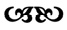

Cennette bir ağaç var derler, dünyadaki hiçbir ağaca benzemeyen. Dalları şeffaftır, kökleri su yerine süt çeker yeraltından ve gövdesi buzla kaplıymış gibi ışıldar. Bu ağacın her bir yaprağında bir insanın ismi yazılıdır. Yılda bir defa, Şaban ayında, on dördüncü günü on beşinciye bağlayan gecede, tekmil melekler onun etrafında toplanır, halka olurlar. Hep birden kanatlarını çırparlar. Dalları sarsan kuvvetli bir rüzgâr meydana getirirler. Usulca kopar bazı yapraklar, düşmeye başlar. Bazen bir yaprağın yere ulaşması epey vakit alır. Bazen de göz açıp kapayana kadar. Bir yaprak toprağa düştüğü an, üzerinde adı yazılı olan insan son nefesini verir. İşte bu yüzden, akıl ve ilim sahibi kimseler kuru yapraklara basmamaya özen gösterirler, bu inanışa hürmeten.
1588 yılında, yağmurlu bir günde ustamın can yaprağı yere değdi. Son lahzaya kadar çalışmıştı, aklı ve sağlığı hep yerindeydi. Sadece son hafta onu yatakta gördük. Biz üç kalfa, senelerdir onunla çalışmış ustabaşılarla beraber başucuna toplandık. Kadınlar, peçelerini takıp kapıya dizilmişlerdi; her ne kadar bakmaya cesaret edemesem de Sancha’nın da aralarında olduğundan emindim. Kafesli pencerelerden süzülen soluk ışıkta, ancak bir fısıltı halinde çıkan sesiyle ustam, vasiyetnamesini yazıp mühürlediğini söyledi. “Ben göçünce okursunuz.”
“Allah sizi başımızdan eksik etmesin” dedi Nikola, gözyaşını silerek.
Üstat, bu nevi sözleri istemediğini anlatırcasına elini havaya kaldırdı. “Bilmeniz gereken mühim bir şey var. Kazalar... Nasıl olduklarını anladım. Hep gözümün önündeymiş meğer... Bunca zaman, hiç görmemişim.”
Odadaki hava birden değişti. Herkes nefesini tutup, birbirine baktı. Bir müddet önce hüzün hâkimken gergin bir bekleyiş vardı şimdi.
“Ben öldükten sonra kırk gün bekleyin” dedi Sinan. “Bilahare vasiyetnamemi açın. Allah’ın izniyle kimin halefim olmasını arzu ettiğimi görün. İnşaya devam etmeniz lazım. Maziyle uğraşmayın, çok çalışın.”
”Ustam, ama kimmiş kazalara sebep?” diye sordum.
“Cihan... en meraklı sendin hep” dedi Sinan. “Dinle. Hepsinin bir nedeni vardı. İnsan o nedeni anlamaya çalışmalı, bunu yapandan nefret etmek yerine.”
Bir izahat bekledim, gelmedi. Az sonra dışarı çıktık, üstadı yeterince yormuştuk. Bu onu son görüşüm oldu. Ertesi akşam, mutat olandan daha erken bir saatte uyumuş. Bir daha uyanmamış. Sermimar sıfatıyla geçen elli yıldan, dört yüzden fazla bina, sayısız türbe ve çeşmenin ardından böyle terk-i dünya eyledi ustam Sinan. Hani mükemmel olmadığını göstermek için hep bir kusur bırakırdı ya camilerinde, yapılarında. Aynı şekilde, ölümü de şahane ama natamam denebilecek bir yaşta geldi. Yüz değil, tam doksan dokuz buçuk yaşında son nefesini verdi.

Sinan’ın ölümünün haftasında ailesi mevlit okuttu. Akrabalar, konu komşu, paşalar, ehl-i hiref, ameleler... Uzak yakın, her yerden gelenler oldu. Öyle çok misafir vardı ki, sokaklara taştılar. Akide şekeri ve şerbet ikram edildi; yedi mahalleye etli pilav dağıtıldı. Bir yandan hatim indirilirken, bir yandan tütsüler yakıldı. Yusuf Sinaneddin bin Abdullah. Tekmil adları birden anıldı; kapalı kalpleri açan bir tekerleme oldu ağızlarda. Duanın ortalarında Cihan’ın burnuna tanıdık bir koku çarptı: ustasının, kaftanlarına sürdüğü mürrüsafi ve yasemin harmanı. Bir an sanki Sinan da oradaymış gibi ürperdi.
Duadan sonra Nikola, Davud ve Cihan bir müddet beraber yürüdüler. Sema, ruh hallerine uymak istercesine bulutlu ve kasvetliydi. Birbirlerine söyleyecek lakırdı bulmakta zorlandılar. Sade kederden değil. Bir şey daha vardı, daha evvel olmayan bir mesafe. Doğru, mazide ufak tefek kıskançlıklar olmuştu aralarında ama Cihan bunları ustalarına hissettikleri ortak sevgiye yormuştu hep. Halbuki şimdi görüyordu ki tamamen farklıydı mizaçları. Bir tek o değildi bunu hisseden. Aniden, kelimelerini dikkatle seçmeye başlamışlardı. Sinan bunca yıldır onları bir arada tutan görünmez bağdı. O bağ ortadan kalkınca bir çekingenlik gelmişti üzerlerine.
Bir pazaryerinden geçerken bazlama almak için durdular. Ölü evinde yemediklerinden acıkmışlardı. Cihan satıcıyla konuşurken birinin hapşırdığını işitti. Hızla dönüp baktı. Zannettiğinin aksine bir yabancı değil, Nikola’ydı. Utanmış gibi iki eliyle yüzünü kapamıştı. Ellerini çektiğinde avuçlarında kan vardı.
“İyi misin?” diye sordu Cihan.
Nikola gülümsedi. Yüzünün sonsuzluğunda iki göktaşıydı gözleri, uzak ve ulaşılmaz. Bu esnada bir köylünün sattığı kaplumbağalarla ilgilenen Davud olan biteni fark etmemişti. Kaplumbağalar revaçtaydı; kabuklarını toz haline getirene kadar dövüp yoğurda karıştırarak yemenin her derde deva olduğu söyleniyordu.
Bir söğüt ağacının altında oturup yediler. İştahları yoktu. Yüzleri solgundu. Beraber ustalarını yâd ettiler. Bu arada her birinin kendi kendine sorduğu soruyu açmaya kimse cesaret edemedi. Acaba içlerinden hangisi üstadın halefi olacaktı? Vasiyetnamenin okunmasını bekleyeceklerdi. O vakte kadar ne deseler boştu. Yıldızlarda neyin yazılı olduğunu bilemezlerdi, Takiyeddin bile bilemedikten sonra. Çok geçmeden her biri kendi yoluna gitti.
Ertesi gün Bâbü’s-saade ağasının huzuruna çağırılan Cihan’a tez vakitte içoğlanı odalarında ders vermeye başlayacağı bildirildi. Artık hocalık mertebesine ermişti. Buruk bir gurur hissetti. Ustası hayatta olsun da bugünleri görsün isterdi. Daha sonra talebeleriyle karşılaştığında onların gencecik çehrelerinde masumiyet ve merak, cesaret ve cehalet, girişkenlik ve tembelliği bir arada bulacaktı. Acaba zamanla bunlardan hangileri diğerlerine ağır basacaktı? Mektep bir fark yaratacak mıydı, yoksa yolları zaten çizilmiş miydi?
Nasıl olduğunu anlamadan haftalar geldi geçti. Bu arada ne Nikola’dan ne de Davud’dan ses çıkmadığını fark etti. Endişelendi, bilhassa Nikola için. Davud’un karısı ve çocukları vardı; Sancha hâlâ Sinan’ın evinde yaşıyordu; Cihan’ın Çotası vardı. Halbuki Nikola’nın kimsesi yoktu. İhtiyar anne babası da yakınlarda rahmetli olmuştu. Cihan onu ne kadar az tanıdığını anladı. Bunca yıldır, yaz kış beraber ter dökmüşlerdi, ama birbirleri için hâlâ birer muammaydılar.
Salı sabahı Cihan Nikola’yı ziyaret etmeye karar verdi. Şehrin üstüne bir sis çökmüştü. Güneş, kül rengi bir perdenin arkasında solgun bir haleden ibaretti. İlk bakışta, Galata yakınlarındaki bu mahalle her zamankinden farksız görünüyordu. Çürük dişler gibi sıra sıra dizilmiş yarı taş, yarı ahşap binalar; çansız kiliseler; mum ve buhur kokuları; ortalıkta dolanan çeşit çeşit insan: Floransalılar, Venedikliler, Rumlar, Ermeniler, Yahudiler ve Fransisken keşişleri.
Atını eşkin sürerek etrafına bakındı. Arka sokaklara girdikçe kalabalık azaldı. Buralar daha sessizdi. Haddinden fazla sessizdi hatta. Yolunda gitmeyen bir şeyler vardı. Kapalı kepenkler, sürgülü kapılar, kaldırımlarda kedi leşleri ve her şeyi sarıp sarmalayan ekşi bir koku. Nikola’nın sokağına girince ürperdi. Bazı evlerin girişlerine kırmızı boyayla haç çizilmişti. Latince ve Rumca dualar dikkatini çekti; yarım yamalak, belli ki aceleyle karalanmış.
Atından atladı. İleride bir işaret daha vardı. Bu seferki Nikola’nın kapısında. Ne yapacağını bilemeden orada dikildi. Kambur bir adam yaklaştı yanına. “Ne istersin yabancı?”
“Arkadaşım Kiriz Nikola burada yaşar, tanır mısınız?”
“Tanırım elbet. Komşum” dedi adam. “Girme, uzak dur.”
“Ne var ki?”
“Lanet. Geri geldi.”
“Yani..?” Cümleyi tamamlayamadı. Anlamıştı. Veba! “Biz niye duymadık?”
Acı acı güldü adam. “Neyi duymana izin verirlerse onu duyarsın” dedi, yürüyüp gitmeden evvel. Fazla uzaklaşmadı. Karşı evin eşiğinde durup oradan seyretmeye başladı.
Cihan, Nikola’nın kapısını itti. Kilitli olsaydı dönüp gitmeye hazırdı. Fakat aralıktı; kapanmasın diye bir kama sıkıştırılmıştı altına. Onu oraya kim koyduysa belli ki geri gelmeye niyetliydi ve evde kapıyı açacak kimse olmadığını biliyordu.
İçeri girdiği an, kesif bir koku tokat gibi çarptı suratına. Kuşağını belinden çözerek ağzına burnuna bağladı. Dar bir sofadaydı. Gözleri loşluğa alışınca ilerledi. İlk oda boştu. İkincisinde, döşekte yatan biri vardı, hasta ve yalnız. Giysileri terden ıslanmış, dudakları kuruyup çatlamıştı. Koyu saçlarının parlaklığı gitmiş, benzi solmuştu, alnı terle kaplıydı; her daim titizlikle tıraş ettiği yüzünde birkaç günlük sakalla bu kişi hem Nikola’ydı, hem başka biriydi sanki. Yanında tahtadan bir heykelcik duruyordu; uzun saçlı, uzun sakallı biri.
Cihan elini arkadaşının alnına koydu. Yanıyordu. Nikola gözlerini araladı. Tanımamış gibi boştu bakışları.
“Benim, Cihan.”
Derinden bir hırıltıyla konuştu Nikola. “Su” dedi boğuk bir sesle.
Uzatılan kâseden kana kana içti. Ama susuzluğu geçmemiş gibiydi. Açık mintanından, göğsündeki morumsu lekeleri ve koltukaltındaki şişliği gördü Cihan. Bu çileli yerden derhal kaçmak için şiddetli bir arzu hissetti ama aklı korkaklık ederken bedeni kıpırdamadı. Derken kapıda bir tıkırtı duyuldu. İki rahibe belirdi. Üzerlerinde uzun, koyu elbiseler, ağızlarında tülbentten maskeler vardı.
“Sen de kimsin?” diye tersledi daha yaşlı olan. “Ne istiyorsun?”
“Arkadaşıyım” dedi Cihan yüzündeki kuşağı indirip. “Rahmetli mimarbaşının yanında beraber çalışırdık.”
“Sert çıkıştıysam kusura bakma” dedi rahibe. “Seni hırsız sandım. Bu evlere bir tek onlar gelir. Ne var ne yoksa çalarlar hastalardan.”
Kadın sirkeye batırılmış bir bezle Nikola’nın alnını sildi. Pislenmiş yatak çarşafını değiştirdi. Tahta heykeli öpüp yakınına koydu. Cihan bu iki rahibenin nasıl olup da ölümden korkmadıklarını merak ettiyse de soramadı. Onun yerine korkuyla fısıldadı: “Çok hasta var mı?”
“Yok ama yakında olur. Daha yeni yayılıyor.”
Nikola öksürmeye başladı. Ağzından kan geldi. Cihan’ın tedirginliğini fark eden başrahibe “Siz gidin” dedi. “Burada yapabileceğiniz bir şey yok. ”
Hüzünlendi Cihan. “Nasıl yardım edebilirim?”
Kadının söylediği tek şey “Dua edin” oldu.
Cihan kapıya yürürken durakladı. “Yanına koyduğunuz heykel kimin?”
“Aziz Tomas” dedi rahibe yorgun bir tebessümle. “Dülgerlerin, inşaatçıların, mimarların, amelelerin koruyucu azizi. Kuşkuculuğuyla bilinir. Her şeyden şüphe edermiş. Tanrı’dan bile. Ama Tanrı onu öyle severmiş.”
İki gün sonra Nikola’nın ölüm haberi geldi. Her şeyin ha bire değiştiği bir dünyada, Cihan’ın Üstat Sinan’dan sonra bildiği en sağlam ve en güvenilir adam da gitmişti. Onu başkaları takip etti. Yüzlercesi. Salgın Galata’dan Üsküdar’a, oradan İstanbul’a sıçradı ve öfkeli bir elle fırlatılmış gibi tekrar Galata’ya sekti. Kimse muaf değildi, saraydakiler dahil. Çinli ikizlerin yerine atanmış Çerkez terbiyeciler Hakk’ın rahmetine kavuştu. Bakıcısız kalan maymunlar kafeslerinde saldırganlaştı. Sangram’ı da aldı hastalık. Memleketini hep hasretle anan bu sakin tabiatlı hizmetkâr Hint diyarından fersah fersah uzakta gömüldü. Vebanın bir sonraki kurbanı Sahaf Simeon’du. Teker teker gittiler. Cihan, bir sonraki kim olacak acaba diye endişeyle bekledi. Fakat nedense illet ona dokunmadan, göçmen bir kuş gibi şehri terk edip güneye yöneldi.
İmparator İustinianos’un kilisesi gitmiş olsa da ayazma hâlâ duruyordu. Balıklı Meryem Ana yakınlarında, Rum mezarlığına gömüldü Nikola. İstirahatgâhında şöyle yazıyordu:
Sermimar kalfası Nikola, inşa ettiği binalar misali
göğe yükseldi. Mekânı cennet, Aziz Tomas yoldaşı olsun.

Topkapı Sarayı’na döndüğünde Çota’yı tek başına buldu Cihan. Onu görünce sevinçli bir ses çıkardı hayvan. Cihan hortumunu okşadı; yanında getirdiği fıstıkları, armutları uzattı. Eskiden olsa derhal kokularını alırdı fil. Fakat vücuduyla beraber koku duyusu da zayıflamıştı. Çota fıstıkları kaptıysa da armutları yiyemedi. Ağzında sadece birkaç dişi kalmıştı. Ona cenazeden bahsetti Cihan. Nikola’yı anlattı hüzünle. Her zamanki gibi gözlerini kısarak dinledi beyaz fil. Ve Cihan bir kez daha onun söylenen her şeyi anladığı hissine kapıldı.
Az sonra ayak sesleri işittiler. Kapıda iki gölge belirdi. Abe ile oğul-Sangram. Babasının yerini alan delikanlı, Sangram’a hem görünüş hem hal ve tavır olarak o kadar benziyordu ki, ölüm bir oyunmuş da yaşlı adamın ruhu tekrar dönmüş gibi herkes ona da “Sangram” diye sesleniyordu.
“Cihan gelmiş!” dedi oğul-Sangram sevinçle, amcası gibi gördüğü adamı karşısında bulunca.
“Ben buradayım da beyzade nerede?” dedi Cihan, yeni filbaz Abe’yi kastederek. “Neden yalnız bu fil? Ayak tırnaklarından biri kırılmış baksana. Yıkanması gerek. Hem buranın pisliği ne böyle? En son ne vakit temizledin ortalığı?”
Abe bir çalı süpürgesini kaptığı gibi rastgele süpürmeye başladı. Toz bulutları havalanırken oğul-Sangram endişeli bir ifadeyle sokuldu. “Haberleri işittin mi?”
“Neymiş?”
“Davud. Terfi etmiş.”
“Ne dedin?”
“Herkes bundan bahsediyor. Arkadaşın yeni mimarbaşı oldu.”
“Na...sıl? Bizim Davud mu?” diye kekeledi Cihan.
“Eh, pek bizim sayılmaz artık. Ta nereye yükseldi baksana!” dedi oğul-Sangram, eliyle tavanı işaret ederek. Gösterdiği yerde kocaman bir örümcek ağı sallanıyordu; tam ortasında, ölü bir atsineğiyle.
“Vasiyetnameyi açmışlar mı peki... ustam mı istemiş?”
Oğul-Sangram, Cihan’a üzüntüyle baktı. “Açmışlar. Anlaşılan ustan Davud’u halef seçmiş. Padişah da onun tavsiyesini dinlemiş.”
“Sahi mi... anlıyorum, iyi olmuş” dedi Cihan tekleyerek. Ayaklarının altında aniden bir uçurum açılıvermişti ve süratle düşüyordu içine, boşluğa.

Aynı günlerde Sinan’ın dul eşi Mihri, âdet olduğu üzre evdeki kölelerin bir kısmını azat etti. Berat verilen ilk kişi Sancha’ydı.
Mihri’nin, çatısı altında yaşayan bu müstesna odalıkla ilgili karışık hisler beslediğini tahmin ediyordu Cihan. Kızı hem seviyor kolluyordu, hem de varlığından rahatsız oluyordu. Nihayetinde kocasıyla, onun asla paylaşamadığı şeyleri paylaşmıştı Sancha. Beraber camiler, kemerler inşa etmişlerdi. Mihri, onun erkek esvabı giyerek inşaat sahalarında çalışmasından hoşlanmadıysa da hislerini kendine saklamıştı. Bu iki kadının arasındaki uçurum öyle derindi ki, iki yakasını birleştirecek bir köprü yapmak kimsenin, Sinan’ın bile elinden gelmemişti. Ve artık Sinan da gittiğine göre, Mihri’nin görmeyi istediği en son çehre Sancha’nınkiydi. Yine de cariyesine fena muamele etmedi. Sancha’ya atlaslar, taftalar ve hoş kokular alıp, onu hayır dualarıyla uğurlamak istiyordu. İşte, meşhur bir İspanyol hekimin kızı Sancha Garcia de Herrera, İstanbul’da esir olarak geçirdiği uzun senelerin ardından böyle özgür kaldı.
Cihan’a bir mektup gönderdi. Kelimelerinden heyecan ve endişe taşıyordu. Hazırlık kabilinden ne yapması gerektiğini bilmediğinden yardım istiyordu. Cihan gecikmeden cevap yazdı.
Kıymetli Sancha,
Mektubun beni hem mutlu hem bedbaht etti. Sevindim çünkü nihayet memleketine döneceksin. Üzüldüm çünkü seni bir daha göremeyeceğim. Haftaya perşembe gelip sana yardım ederim. Hazır olmak hususunda endişelenme. Sen uzun zamandır buna hazırdın zaten.
Beklenen gün gelince, Cihan Sinan’ın evinde Sancha’yı ziyaret etti. Tanıştıklarından beri ilk defa onu üzerinde bir elbiseyle gördü. Gözlerinin rengini ortaya çıkaran zümrüt yeşili elbisesinin eteği kabarıktı. Hâlâ kısa olan saçlarının üstünde Frengistan’da hanımların kullandığı türden tüllü bir başlık vardı.
“Öyle bakma bana” dedi kızararak. “Çok çirkinim.”
“Nasıl böyle dersin? Hem de bu kadar güzel olmuşken?”
Sancha’nın yanaklarının pembeleştiğini görünce muzipçe ekledi: “Düşünsene, bütün o duvarcılar bunca yıldır aralarında bir hatun olduğunu bilselerdi işi gücü bırakıp sana aşk şiirleri yazarlardı. Bir tane bile cami inşa edemezdik.”
Sancha güldü; gözlerini yere dikmiş; parmaklarını, altında balina kemiğinden çember bulunan elbisesinin kıvrımlarında dolaştırıyordu. “O kadar dar ki zor nefes alıyorum. Kadınlar nasıl giyiyor bunları?”
“Alışırsın, tasalanma.”
“Keşke ustam da böyle görebilseydi beni” dedi Sancha.
Dışarıdan geçen bir arabanın tıngırtısı işitildi. Cihan pencereden bakınca üst üste kafesler içinde gözleri bağlı şahinler gördü. O arada Sancha’nın ağladığını fark etmedi. Kadın olduğu halde erkek, söyleyecek çok sözü olduğu halde dilsiz, mimar olduğu halde odalık... Hayatı yalanlar ve kabuklarla doluydu. Cihan gibi.
“Serbest kaldığın için sevinçten havalara uçarsın sanmıştım.”
“Mutluyum” dedi Sancha burnunu çekerek. “Sadece... Ustamın mezarı bu şehirde. Beraber yaptığımız her şey... İstanbul’u bırakmak kolay değil.”
“Üstat gitti” dedi Cihan. “Artık bizimle değil. Onu terk etmiyorsun.”
Sancha, bu konuda daha fazla konuşmamaya çalıştıysa da başaramadı. “Sence beni hiç sevdi mi?”
Cihan durakladı. “Kanaatimce sevdi. Yoksa neden bize katılmana izin versin? Biri anlasa başı derde girerdi.”
“Kendini benim için tehlikeye attı” dedi Sancha bir nebze gururla. “Ama beni sevmedi. Benim onu sevdiğim gibi değil.”
Cihan bu defa yorum yapmadı. Sancha’nın da cevap bekler gibi bir hali yoktu. “İşittiğime göre iki haftaya Venedik gemisi yelken açacakmış.”
Cihan başıyla onayladı. Günlerdir geminin evlerden, ağaçlardan uzun gabya direğini seyrediyordu. “Gerekli tertipleri yaparım.”
Şükranla baktı Sancha. Huzursuz bir heyecan geçti gözlerinden. “Sen de gel. Seni buraya bağlayan hiçbir şey yok. Vasiyetname açıldı.”
Böyle konuşmasına şaşıran Cihan şakaya vurmaya çalıştı. “Tabii ya, İspanyol kibarlarına konaklar inşa ederiz.”
Sancha, Cihan’ın elini tuttu; dokunuşu yumuşak, elleri soğuktu. “Bir bani buluruz kendimize. Birbirimize kol kanat gereriz.”
Sancha’nın tanıdık hareketlerini seyrederken kalbinde bir kıpırtı hissetti Cihan. Olabilirdi. Onları bir arada tutan kuvvetli bir zamk vardı: Sinan’ın hatırası. Kalplerini zanaatları dışında her şeye kapatarak yaşayabilirlerdi. Aşk gerekli değildi. Hatta yokluğu daha iyiydi. Aşk sadece ıstırap getirirdi. Sevgi yeterliydi.
“Belki hâlâ geç değil, çocuğumuz olabilir” dedi Sancha utanarak.
Işıldadı Cihan’ın yüzü. “Cesaretini senden alan bir kız.”
“Ya da deliliğini senden alan bir oğlan.”
“Peki ya Çota?”
“Çota ihtiyarladı. Sarayda mutlu. Bir şey olmaz ona. Burada göçecek, sen de biliyorsun. Halbuki biz inşaat yapmaya devam etmeliyiz...”
“Bize nimet gökten yağmaz, taştan topraktan gelir” dedi Cihan, ustalarının düsturunu tekrar ederek.
“Kubbe” dedi Sancha. “Bütün sesleri toplayan bir kubbe. İnsanlara bir Rab olduğunu ve onun korku ve ceza değil, merhamet ve sevgi saçtığını hatırlatacak kubbeler yapmalıyız. Kimseyi ezmeyen. İnsan ile Tanrı’yı yakınlaştıran kubbeler.”
Cihan durdu. O an gördü ki esasında seçmediğimiz tercihler, sapmadığımız yollardı hayatlarımızı çizen. Sancha’ya olan sevgisine rağmen onunla gitmeyecekti. Hislerini yüzünden okumuştu Sancha. Gözleri doldu ama ağlamadı. Gözyaşlarını ustasına saklıyordu, tek aşkına.
“Beni unutma... Yusuf...” dedi Cihan.
Sancha başını eğdi. “Unutur muyum Hintli” dedi sadece.
Bundan takriben bir hafta sonra, üç direkli ve yuvarlak kıçlı bir karak dönüş seyahatine hazırdı. İmtiyazlarını Fransızlara, Hollandalılara ve İngilizlere kaptıran tüm Venedikli tacirler gibi kaptan da mutsuzdu. Gene de o gün kaygılarını dağıtmaya yetecek kadar telaş ve koşuşturma vardı. Gemiciler fıçıları taşırken tüccarlar atmaca gibi mallarına göz kulak oluyordu. Bir kenarda durmuş bekleyen az sayıda yolcu mevcuttu: Cizvit papazlar, Katolik rahibeler, seyyahlar, elinden yelpaze düşmeyen bir İtalyan asilzadesi. Bunlar dışındakiler denizcilerdi.
Cihan elini gözlerine siper ederek etrafa bakındı. Sancha görünürde yoktu. Fikrini değiştirmiş olabileceğini düşündü. Sabah uyandığında gidemeyeceğini, buraya ait olduğunu anlamıştı belki. Fakat az sonra, yüklenmeyi bekleyen fıçılar arasında dolanırken Sancha’yı karşısında buluverdi. Onu yeniden erkek giysilerinin içinde görünce şaşırdı. Azıcık uzayan saçlarını gene kesmişti.
“Niye çıkardın elbiseni?”
“Böylesi daha iyi” dedi Sancha.
Cihan etrafa baktı hamallar nerede diye. Kimse yoktu. “Eşyaların nerede?”
Sancha yerde sürüklediği bez heybeyi gösterdi.
“Elbiselerin? Mihri Hatun’un hediyeleri?”
“Hepsini fakir fukaraya dağıttım. Sakın söyleme.” Heybesini açıp Sinan’ın ona verdiği oymalı kutuyu gösterdi. Yanında bir düzine kâğıt tomarı ile kıymetlice görünen bir gerdanlık vardı. “Bunları aldım. Üstattan bana miras.”
Gemiyi karaya bağlayan köprüye kadar sessizce yürüdüler.
“Davud’a veda edemedim” dedi Sancha. “Benim için de tebrik et onu.”
Cihan başını salladı. Kendisi de henüz temas kurmamıştı, doğrusu içinden gelmemişti. “Aman kimse anlamasın kadın olduğunu...”
“Tasalanma. Başımın çaresine bakabilirim.”
“Biliyorum” dedi Cihan usulca.
Sancha gözlerini kaldırdı. “Dün gece... kötü bir rüya gördüm. Tuzağa düşmüştün. Benden yardım istiyordun ama seni bulamadım. Dikkat et.”
Birileri güverteden kalkış borusunu çaldı. Cihan boğazının düğümlendiğini hissetti. Parmaklarının arasından kum taneleri gibi akıyordu her şey: Mihrimah göçmüştü; ustası ve Nikola da; Çota’nın günleri sayılıydı ve şimdi Sancha ayrılıyordu. Yalnız diye Nikola’ya üzülmekle hata etmişti. Kendisi de onun kadar kimsesizdi aslında. Sancha’yla gitmek istedi bir an. Her şeyi bırakıp gidebilmek... Beyaz fil olmasa yapardı sanki.
O ikindi, limanda durup, Sinan’ın dilsiz kalfasını taşıyan geminin uzaklaşmasını seyretti. Her kalp atışında biraz daha açıldı aralarındaki mesafe. Her kalp atışında biraz daha eridi hikâyeleri, sonunda sadece bir masal oldu.

Cihan günlerce Davud’a nasıl mektup yazacağını düşündü. Hangi cümleye başladıysa samimiyetsiz buldu, vazgeçti. Defalarca uğraştıktan sonra tebrik ve iyi dileklerini ileten kısacık bir mektup kaleme almayı başardı.
Hemen bir cevap beklemiyordu ama geldi. “Her şey çok hızlı oldu” diyordu Davud. Üstat Sinan’ın vasiyetnamesini açıp onun son arzusunun ne olduğunu öğrenen şevketli sultanımız, Allah ona uzun ömürler versin, naçizane bana bu şerefi bahşetti. Ustamızın kıymetli kaftanını benim naçiz omuzlarımın üstüne attı. “Kabul etmekten başka ne yapabilirdim ki?” diye soruyordu, tasdik edilmeye ihtiyacı varmış gibi. Cihan’a muhakkak gelip kendisini ziyaret etmesini söylüyordu. Eski günlerden dem vurur, hasret giderirlerdi.
Gidemedi Cihan. Kalbi pak değildi. Davud’un bunu gözlerinden okumasından korkuyordu. O ana kadar denktiler birbirlerine. Şimdiyse kader, arkadaşının yüzüne gülmüştü. Cihan anladı ki eş rütbeli iki insan arasında en zor hazmedilen şey, birinin terfi edip diğerinin etmemesiydi. Gıpta etmemeye çalıştıysa da başaramadı. “Ustam hayatta olsaydı halimi ayıplar, benden utanırdı” dedi kendi kendine. Böylece, günler gelip geçti. İstese de istemese de kulağına Davud’la ilgili dedikodular çalınıyordu. Şerefine düzenlenen merasimde Davud’a altın bir murç ile keseler dolusu para ve Üstat Sinan’ın mührünü taşıyan yeşim yüzük takdim edildiğini duydu. Her taraftan onunla ilgili haberler yağıyordu: geçenlerde üzerinde muhteşem bir kaftanla görülmüştü; Çerkez odalıklara bayılıyordu ve haremini onlarla doldurmuştu; zevcesinin üstüne ikinci ve üçüncüyü almıştı; avlusunda tavus kuşları ve Semerkant’tan getirttiği şahinler besliyordu... Cihan bunları dinledikçe kıskançlığı bileniyordu. Bu arada ders vermeye devam ediyor, talebelerinin başarılarında teselli buluyordu. Bilhassa bir tanesinden pek memnundu. İsmi İsa olan bu oğlan ileride yetenekli bir mimar olacaktı.
Geceleri, döşeğinde, asla inşa edilmeyecek binalar tasarlıyordu Cihan. Bunlardan biri, yaban hayvanlarının serbestçe dolaştıkları, insanların camlarla kaplı bir dehlizin içinde yürüyerek kendilerini tehlikeye atmadan onları seyredebildikleri bir bahçeydi. Bu arada Çota’nın üç tırnağı daha düştü. Mantar olmalıydı. Cihan zavallı Abe’ye çatmaktan vazgeçti. Fil yaşlanmıştı. Ve kabul etmeye razı olmasa da, Cihan da öyle.
Bir ay sonra yeni bir camiye başlanacağı ve kendisinin de başkalfa olarak atandığına dair bir mektup geçti eline. Maaş olarak mebzul bir miktar ödenecekti. Davud’un ona ne kadar güvendiğinin emaresiydi bu. O, hasetten yanıp kavrulurken arkadaşı onu şereflendirmişti. Cihan, Davud ile görüşmekten daha fazla kaçamazdı. Bir mektup yazarak teşekkür etti; ziyaretine gelmek için izin istedi. Davud cevaben onu Vefa’daki evine davet etti.
Itırlı bahçesi göz alabildiğine uzanan köşkü bulmak zor olmadı. Ne de olsa ahalinin dilinden düşmüyordu Davud’un yeni evi. Bir uşak, misafiri bahçe kapısında karşıladı; geniş ve aydınlık bir odaya aldı. Yalnız kalınca etrafına bakındı Cihan. Sedef kakma bir dolap ve eş sehpalar; işlemeli minderlerle bir divan; altın yaldızlı şamdanlar; insanın üstüne basmaya kıyamayacağı şahane bir Acem halısı ve ortada pirinçten bir maltız vardı. Derin bir sessizlik hâkimdi eve. Ne harem tarafından bir ses geliyordu ne de yoldan geçen bir arabanın tıngırtısı. Sanki martıların çığlıkları bile ulaşmıyordu buraya. Davud’un karısının bu değişikliklere –ve üstüne gelen kumalara– ne dediğini merak etti. O bunlara kafa yorarken bir başka uşak gelip efendisinin Cihan’ı kabul etmeye hazır olduğunu söyledi.
Davud şişmanlamıştı. Sırtında gök mavisi kaftan, başında koca sarık ve kısa kesilmiş yuvarlak sakalıyla neşeli görünüyordu. Ceviz bir masada oturuyordu, elinde tuttuğu kuştüyüyle az evvel bir şeyler imzalamıştı besbelli. Dört çırak vardı yanında: Benzer şekilde giyinmiş, ellerini önlerinde birleştirmiş, başlarını eğmiş halde, ikisi bir yanında, ikisi diğer yanında duruyorlardı. Cihan’ı görünce gülümseyerek ayağa kalktı Davud. “Nihayet kavuştuk!”
Cihan daha düne kadar arkadaşı, bir ara yoldaşı, şimdiyse ustası olan adamı nasıl selamlayacağını bilemedi. Tam öne eğilecekti ki Davud elini onun omzuna koydu. “Bu odanın dışında senin üstün olabilirim. Ama içeride arkadaşız.”
“Sağ olasın. Daha evvel gelemedim, kusuruma bakma” dedi Cihan.
“Mühim değil. Şimdi buradasın işte” dedi Davud.
Yusuf’un şehirden ayrıldığını anlattı Cihan, hiçbir ayrıntıya girmeden.
“Demek sadece iki kaldı” diye mırıldandı Davud.
“Ne?”
“Dört idik, senle ben kaldık. Sinan’ın vârisleri biziz. Birbirimizi kollamamız gerek. Ustamızın mirasına sahip çıkmalıyız.”
Siyah bir hizmetkâr, şerbet dolu bir tepsiyle içeri girdi; bir fısıltı kadar sessizce tepsiyi sehpanın üzerine bıraktı. Odanın diğer tarafındaki acemi gençler hiç kıpırdamadan öylece dikiliyorlardı.
“Hadi buyur!” dedi Davud, misafirine oturması için işaret ederek.
Karanfilli gül şerbeti harikaydı, içine konan buzlar Bursa’dan getirilmişti – zengin evlerine has bir imtiyaz. Davud lafa girdi: “Yapacak o kadar çok iş var ki baş edemiyorum valla. Zevcelerim şikâyet ediyor. Sermimar olacaksın ama evin etrafındaki parmaklıkları tamir etmekten âcizsin diyorlar. Arka bahçedeki parmaklık çürüdü, hâlâ ilgilenemedim.”
Cihan anlayışla gülümsedi.
“Senin gibi namuslu birine ihtiyacım var. Sağ kolum olmanı isterim.”
Cihan bunu kabul ederse ders vermeyi bırakmak zorunda kalacağını fark etti; talebelerini düşündü. Tereddüdü yüzünden okunmuş olmalı ki, “Ne oldu?” diye sordu Davud. “Benden emir almak zor mu geliyor?”
“Olur mu öyle şey?” dedi Cihan ama ikisi de bu lafta bir doğruluk payı olduğunu biliyordu.
“O halde tartışacak bir şey yok demektir” dedi Davud ellerini çırparak.
Yapmayı istediklerinden bahsetti. Anadolu düzlüklerini kasıp kavuran Celali isyanları yüzünden inşaat malzemesi getirmek güçleşmişti. Artık kimse devasa selatin camileri sipariş edemiyordu. Cihat ganimetleri yoksa hiçbir hükümdar böyle masraflı inşaatlara girişemezdi. Payitahtta mimarinin gelişmesi için evvela hazine dolu olmalıydı. “Anlayacağın ustamız vakitlice öldü” dedi Davud durgun bir sesle. “Şayet bugün yaşasa yüreği burkulurdu.”
Beraber çalışmak istedikleri zanaat erbabı –dülgerler, duvarcılar, sengtraşlar, çiniciler– hakkında konuştular. Eski günlerden dem vurdular. Derken bir ulak mektup getirdi. Görünüşe bakılırsa mühimdi. Davud masasına oturdu, çırakları da iki yanındaydı. Onun ne kadar meşgul olduğunu gören Cihan ayaklandı.
“Gitme” dedi Davud, başını hokkasından kaldırmadan. “Yemeğe kal.”
“Rahatsız etmek istemem.”
“Yok yahu. Israr ediyorum” dedi Davud.
Yapacak işi olmayan Cihan, pencerenin yanında durup, bir balıkçı teknesini seyretti. Derken köşedeki kütüphaneye yürüdü. Parmaklarını ciltlerin sırtlarında gezdirdi. Şu Luther nam rahibin yazdığı Türklerle Harbe Dair adlı kitap ile Elyot nam İngiliz’in kendi kralına ithaf ettiği Vali’nin Kitapları adlı eseri gördü orada. Macar Kralı Matyas’ın kütüphanesinden gelen risaleleri buldu. Ve işte Dante’nin La Divina Commedia’sı da oradaydı. Sahaf Simeon’un Cihan’a hediye ettiği, Cihan’ın da defalarca okuduktan sonra ustasına verdiği kitap. Titreyen ellerle çekip aldı, sayfalarını karıştırdı. Hiç şüphesi yoktu, onun cildiydi bu. Besbelli, Üstat Sinan’ın kitaplarını devralmıştı Davud.
Bir oğlan gelip mumları yaktı. Cihan’ın gölgesi duvarda büyüdü. Vitruvius’un De Architectura’sını gördü o sırada; uzanıp aldı Buda’dan İstanbul’a seyahat etmiş olan kitabı; elinde tuttu bir süre. Onu yerine koyarken, rafın arka tarafında, buruşmuş bir tomar olduğunu fark etti. Açar açmaz tanıdı Selimiye Camii’nin taslağını. Caminin ihtişamı karşısında eskisinden de büyük bir hayranlık hissetti. Resme baktıkça, daha açık renk mürekkeple yapılmış birtakım işaretler çarptı gözüne. Sanki taslak tamamlandıktan sonra birisi üzerinde çalışmış, inşaatın muhtelif kısımlarını gözden geçirmişti. Bu işaretleri ustasının yapmış olduğuna kanaat getirdi. Cihan’ın gözleri kâğıdın kıyısını taradı. 15 Zilhicce 980. O günlerde neler yaptıklarını hatırlamaya çalıştıysa da hiçbir şey gelmedi aklına. Arkadan mırıltılar yükseldi; işini bitiren Davud, çıraklarına emirler yağdırıyordu. Cihan tomarı aceleyle aldığı yere bıraktı ve arkadaşına katıldı. Yemekte işkembe çorbası vardı; arkasından dana etli pilav, kuzu yahnisi, sülün, etli börek ve koca bir tabak dolusu, Cihan’ın ne olduğunu bilemediği bir et.
“Bak bu şahane bir lezzet” dedi Davud.
“Nedir ki?” diye sordu Cihan.
“Karaca! Dün avlandı. Şeker gibi eriyor ağızda” dedi Davud. “Meğer hayvan ne kadar hızlı ölürse tadı o kadar güzel olurmuş. Korku lezzeti bozuyormuş. Bizimki hiç korkmamış. Başına ne geldiğini anlamamış garip.”
Yıllar evvel ormanda Sultan Süleyman’ı beklerken gördüğü geyiği hatırladı Cihan. Kabalık etmemek için bir lokma yemeye zorladı kendini. Çiğnemeye çalıştıysa da et ağzında topak oldu, midesi kasıldı. Nihayet yutabildiğinde “Ava gittiğini bilmiyordum” dedi.
Cihan’ın rahatsızlığını hisseden Davud tabağı kenara koydu. “Ben değil be Hintli. Öyle şeylere vaktim mi var? Yüreğim dayanmaz zaten.”
Ayrılma vakti gelince Davud misafirini kapıya kadar uğurladı. Arkadaşından yükselen bir koku çarptı Cihan’ın burnuna: yapraksı, baygın ve aşina olduğu bir rayiha. Fakat öyle çabuk dağıldı ki gecenin esintisinde, bunu daha evvel nerede, ne zaman koklamış olduğunu hatırlayamadı.

Yeni başlayan inşaattan vakit buldukça Çota’nın yanına koşuyordu Cihan. Taslaklarını da alıp ahıra gidiyor ve diğer terbiyecilerin gülerek “taht” dedikleri bir saman balyasının üstüne oturarak çizim yapıyordu. Çota dalgın dalgın onu seyrediyordu ama Cihan mahlukun kendisini gördüğünden emin değildi. Zaten hiçbir zaman iyi olmayan gözleri iyice kötülemişti.
Zavallı Abe elinden geleni yapıyordu. Cihan’dan korktuğu için değil, beyaz file olan sevgisinden. Fakat tüm gayretlere rağmen Çota düzelmedi. Kalan üç dişinden birini daha kaybetti. Artık ne ısırabiliyor, ne çiğneyebiliyordu. Ne kadar zayıfladığını anlamak için Karaköy limanında denizcilerin kullandığı kantarlarla tartmaya gerek yoktu. Durup dururken uyuyakalıyor, dengesini kaybedip oraya buraya çarpıyordu. Su içerken, yıkanırken ya da bahçede dolanırken hareketleri yavaşlıyor, kafası önüne düşüyordu. Onu böyle çaresiz ve şaşkın görmek Cihan’ın ağırına gidiyordu. Birkaç kez hayvanı, kemirmeye bayıldığı ıhlamur ağacına hasretle bakarken yakalamıştı. Yemeklerini ezip toz haline getiriyor, sonra da bunu suyla karıştırarak bir huni vasıtasıyla ağzından içeri döküyorlardı. Hiç değilse midesine besin gidiyordu. Bir daha kaçmaya kalkışmadı. Esasında günbegün hareketsizleşti; havuza kadar yürümeyi bile reddediyordu. Abe pisliklerini kürekle temizliyor, teknesini yıkıyor, sütle besliyordu ama beyaz fil mum gibi eriyordu.
Çota’ya endişelenmekten uyumakta zorlanıyordu Cihan. İşte yine böyle uykusuz bir gece yatağında dönerken ustasının vasiyetnamesi takıldı aklına. Sinan’ın kendisinden ya da filden hiç bahsetmemiş olduğuna inanamıyordu. Onun bildiği ustası, bunca yıl kendisiyle bu kadar yakın çalışmış iki varlığa mutlaka bir şey bırakırdı. Kim bilir belki de Sinan bırakmıştı ama kimse bunu Cihan’a söyleme zahmetine girmemişti. Düşündükçe bu ihtimal akla yakın geldi. Şayet üstadın Çota için bir son arzusu varsa bunu bir an evvel öğrenmeliydi. Zira filin yakında öleceğine şüphesi yoktu. Bu niyetle kalkıp Bâbü’s-saade ağasına gitti.
“Üstat Sinan’ın vasiyetnamesini soracaktım. Siz gördünüz mü?”
Adam sürme çekilmiş mavi gözlerini kıstı. “Neden bana soruyorsun?”
“Tanıdığım en kudretli saray memurusunuz da ondan.”
Kaşlarını çattı hadım. “Gördüm, evet.”
Cihan’ın yüzü aydınlanıverdi. “Çota’nın bahsi geçiyor muydu?”
“Şimdi sen sorunca hatırladım, file kıymetli bir haşa bırakmış. Unutmayayım da göndereyim.”
“Allah razı olsun” dedi Cihan. Demek gerçekten Sinan filden bahsetmişti. “Peki ya... ben?”
“Sana da kitaplarını bıraktı.”
“O halde Davud neden bahsetmedi acaba? Üstadın kütüphanesini onun evinde gördüm. O kitaplar benim mi yani?”
“Amma sorarsın be mübarek. Nereden bileyim. Bunlar farklıdır herhalde...” dedi hadım sabırsızca. “Haşa ile kitapları göndermelerini söylerim. Hadi git artık.”
Cihan başını salladı. Ama içine sinmeyen bir şeyler vardı.
Ertesi gün Cihan, Abe’yi bir taşa oturmuş ağlar buldu. “Mahluk” dedi oğlan, cümlesini havada asılı bırakarak.
Cihan usulca ahıra girdi. Çatlaklardan içeri güneş ışınları süzülüyor, tozlar havada uçuşuyordu. Çota bir başınaydı, güçlükle nefes alıyordu. Cihan hortumunu avuçlarıyla ovaladı, su içirmeye çalıştı ama fil istemedi. Kızıl-kahve gözlerini terbiyecisine dikti. Cihan, o güne dek kat ettikleri yolların izlerini gördü o gözlerde. Kırkı aşkın sene evvel bitkinlikten perişan bir halde beyaz filin gemiden çıkartılışını hatırladı. Ne çok badire atlatmışlardı beraber.
“Affet” dedi Cihan. “Sana daha iyi bakamadım.”
O gün Çota’nın yanından ayrılmadı. Hayvanın tekdüze kalp atışlarını dinleyerek uyuyakaldığında saat gece yarısını geçmişti. Sabah, bir ağaçkakanın, şifreli bir haber verircesine tıktıklamasıyla uyandı. Ahırın içi sessizdi. Fil, hareket etmeden yatıyordu. Vücudu şişmişti; sanki uyurken yel hortumundan içeri dolmuş ve bir balon gibi onu şişirmişti.
“Şanına yaraşır bir cenaze olmalı” dedi Cihan gördüğü herkese.
Abe ile beraber hayvanı yıkayıp ilaçladılar. Nurbanu’nun, oğlu tahta varana dek Sultan Selim’in cesedini nasıl bozulmadan sakladığını hatırlayan Cihan, buz kalıpları buldurttu. Beyhude bir çabaydı. Fil fazla büyük, buzlar yetersizdi. Gene de Çota’nın heybetine yakışır bir merasim tertip edilene kadar cesedini saklamaya kararlıydı. Ancak mesele Bâbü’s-saade ağasının kulağına gitti. Karanfil Kâmil Ağa keder ve delilik de dahil her şeyden mesul zat sıfatıyla hayvanat bahçesine geldi.
“Şimdi de merasim diye tutturmuşsun.”
“Çota Hint şahının Sultan Süleyman’a hediyesiydi. Böyle fil gelmedi buralara, gelmez de” dedi Cihan.
“Alt tarafı bir hayvan” dedi Karanfil Kâmil Ağa.
“Fevkalade bir hayvan.”
İtiraz edilmeye alışkın olmayan hadım ağa öfkelenmekten ziyade şaşırmış gibiydi. “Bu kadar zevzeklik kâfi” dedi. “Vedanı et. Fransız sefiri alacak mahluku.”
“Ya? Ne için?”
“Teşrih edecekmiş. Müsaade istedi, aldı.”
Karnına yumruk yemiş gibi irkildi Cihan. “Kesip açacak mı yani? Asla!”
“Sultanın emridir, sana laf düşmez.”
“Peki ama...” Cihan cümlesini bitiremedi. Peki ama sultan biliyor mu bunun alelade bir hayvan olmadığını? Bu soru ruhunun en derin köşelerinde yankılandı. Keşke Üstat Sinan hayatta olsaydı; o bilirdi ne yapılacağını, nasıl konuşulacağını.
Aynı gün, Çota’nın çelenklerle süslenmiş bedeni beş öküz tarafından çekilen bir arabaya yüklendi. Bu vaziyette İstanbul sokaklarında son kez dolaştı koca fil. İnsanlar şaşkınlıkla baktılar. Üzüntüden ziyade ilginç bir ana tanıklık etmenin merak ve keyfi vardı yüzlerinde. Kimileri işi gücü bırakıp arabanın peşine takıldı. Cihan alayın başında gidiyor, donuk gözlerle ileriye bakıyor, ağlamamak için kendini zor tutuyordu. Kurbanlık kuzuyu kasaba teslim eder gibi filin cansız bedenini sefire teslim etti.
Döner dönmez soluğu Karanfil Kâmil Ağa’nın yanında aldı. İtaatsizliğin cezası büyüktü ama umurunda değildi. Canı o kadar yanıyordu ki...
“Ustamın beyaz file hediye ettiği haşa nerde? Hani? Bari ölüsünün üstüne örtelim. Vermezseniz şurdan şuraya gitmem. Hem ben bu vasiyetnameyi görmek isterim. Görene kadar da susmayacağım. Umurumda değil ne ceza biçtiğiniz!”
Karanfil Kâmil Ağa’nın gözbebeklerinde garip bir pırıltı yandı söndü. “Yastasın diye ses çıkarmıyorum, üzerine varmıyorum. Git benden haber bekle” dedi boğuk bir sesle. “Seninle bir konuşmamız lazım.”

Ertesi gün, Cihan Bâbü’s-saade ağasının huzuruna çağırıldı. Aklına ilk gelen, adamın ona beter bir ceza vereceğiydi. Olsun varsın, ne gam. Daha evvel hiç bilmediği bir fütursuzluk gelmişti üstüne. Ağanın odasına alındığında gönülsüzce eğildi ve gözlerini mermer zemine dikerek bekledi.
“Kaldır kafanı!” Emir, bir kırbaç gibi şaklamıştı havada.
Söyleneni yaptı Cihan. Ve Topkapı Sarayı’na geldiği, gelip de o unutulmaz sopayı yediği günden beri ilk kez Bâbü’s-saade ağasının gözlerinin içine baktı. Koyu maviydi gözleri bugün, devedikeni renginde.
“Yıllardır seni izlerim. Kimselere benzemezsin. Hemen yükseldin. Başka hiçbir terbiyeci senin yaptıklarını yapamadı. Hem filbaz oldun, hem mimar kalfası. Ama seni tutmam bundan değil. Niye takdir ederim biliyor musun?”
Cihan kayıtsızca bekledi. Adamın kendisini takdir ettiğinden haberi yoktu.
“Her devşirme, çeliğe su verir gibi şekillenir. Sen de bizden birisin. Fakat hata yaptığın bir husus var. Ne biliyor musun?”
“Bilemedim” dedi Cihan.
“Fazla muhabbet!” Kelime dilinde nahoş bir tat bırakmış gibi aşağı kıvrıldı ağzının kenarları. “Şehirde bir sürü çırak var. Yüzlerce. Ustalarına hürmet eder hepsi. Sense sevdin. Fille de aynı şey. Senin işin ona bakmaktı; karnını tok, sırtını pek tutman yeterdi. Tutup sevdin hayvanı.”
“Bilerek yaptığım bir şey değil. Kendiliğinden olur.”
“Beni dinle, kimseyi fazla sevme” dedi hadım ağa. “Madem ustan gitti, fil de yok, seni ben kollayacağım gayrı. Bana sadık kalırsan mağlup olmazsın.”
“Harpte değilim ki galibiyet arayayım” dedi Cihan.
Bu çıkışı işitmezden geldi hadım ağa. “Sana yardım edeceğim diyorum. Evvela şu gerginlikten kurtulalım. Gamın kederin temizlendiği bir yer var. Oraya götüreyim. Hüzünler Hamamı deriz adına.”
Cihan gözlerini kırpıştırdı. Bu ismi bir yerlerden hatırlıyordu ama öyle silik bir hatıraydı ki, bir başkasının hayatından alınmış gibiydi.
“Oraya gidip unuturuz. Her şeyi. Anlıyor musun?”
Anlamasa da başıyla tasdik etti Cihan.
“Âlâ. Hadi git hazırlan. Bu gece seni oraya götüreceğim.”
Hava kararınca bir hizmetkâr gelip Cihan’ı aldı. İriyarı, geniş omuzlu bir adamdı; sağır ve dilsizdi. Cihan adamın elindeki feneri izleyerek avluyu kat etti; arka kapılardan geçti. Kimse dönüp bakmıyordu. Başlarının üstünde uçuşan sineklerle ayaklarının çıkardığı ses olmasa görünmez olduklarına inanacaktı.
Şehrin üstü simsiyah kadifeden bir örtüyle kaplanmış gibiydi. Altı küheylanın çektiği bir araba bekliyordu. Cihan, o loş ışıkta bile seçebildiği yaldızlı tokalara, oymalı levhalara hayranlıkla baktı. İçeride Bâbü’s-saade ağası, kenarları kakım kürklü bir harmaniyeye bürünmüş, oturuyordu. Cihan yerleşir yerleşmez adam asasıyla tavana vurdu. Yola düştüler.
Araba öyle hızlı ve gürültülü gidiyordu ki Cihan insanların –ekmek yoğuran fırıncıların, bebeklerini emziren annelerin, yükünü tutmuş hırsızların, bir kadeh daha götüren ayyaşlarla bir dua daha eden dindarların– onları duyduğundan emindi. Bâbü’s-saade ağasının gece seferlerinden kim bilir kaç kişinin haberi vardı da çenelerini kapalı tutuyorlardı. Demek hemen herkesin bilmesine rağmen hâlâ konuşulmayan sırlar vardı.
Nihayet durdular. Geldikleri ara sokak öyle karanlıktı ki Cihan inip inmemekte tereddüt etti. Arabacı, elinde lambayla önden gidiyordu. Süslü bir bahçe kapısına vardılar. Bâbü’s-saade ağası üç defa yüzüğüyle, iki kez eliyle vurdu.
“Sümbül?” dedi kapının arkasından bir ses.
“Sümbül, evet!” diye tekrarladı Bâbü’s-saade ağası.
Huzursuz oldu Cihan. Hadım ağa, annesinin ona çocukluğunda taktığı ismi biliyor olabilir miydi? Her tarafta casus olduğunun farkındaydı ama... O bunlara kafa yorarken kapı açılmıştı.
Diğer yanda kimsecikler yoktu. Belki de rüzgârdı demin konuşan. Sürgüyü de erguvan ağacı açmıştı, alt dallarını uzatıp. İçeri girdiklerinde, Cihan’ın hayatta gördüğü en kısa boylu insan tarafından karşılandılar. Vücudunda yara ve kırık izleri vardı. Cihan bunu bilmese de bu vaktiyle bir veba salgınında öfkeli güruhtan dayak yiyen cüce kadından başkası değildi bu. Cihan’ın sabit bakışlarını fark edince bir kahkaha attı. “Ne o? Cüce mi görmedin daha evvel, yoksa kadın mı?”
Cihan kızardı, bu da kadını daha çok güldürdü. Bâbü’s-saade ağasına dönerek sordu: “Nereden buldunuz bunu?”
“İsmi Cihan. Mimardır. Kabiliyetli ama kalbi pek yumuşak.”
“Çaresi bulunur” dedi kadın. “Hoş geldin civanım!”
Buraya gayet aşina olan Bâbü’s-saade ağası minderlere yayıldı ve Cihan’a da aynısını yapmasını söyledi. Çok geçmeden, ellerinde musiki aletleriyle beş odalık zuhur etti. Öyle şık giyinmişlerdi ki Cihan onların kendilerini beklediklerinden emindi. Bir çehreden diğerine kayan gözleri sonuncu kadına takıldı. Geniş alnı, biçimli burnu, sivri çenesi ve iri kehribar gözleriyle, Mihrimah’a şaşılacak derecede benziyordu. Cihan’ın başı döndü. Onun üstünde yarattığı tesirin farkındaymış gibi, başını eğip tebessüm etti kadın. Neşeli bir hava söylemeye başladılar.
Gümüş bir tepsi üstünde, safran rengi, fındık büyüklüğünde macun topları ikram edildi. İçlerinden birini seçerek parmaklarının arasında dikkatle tuttu Cihan. Bâbü’s-saade ağası üç tane aldı ve arka arkaya hepsini attı ağzına; uzanıp gözlerini kapattı. Cesaretlenen Cihan kendininkini yuttu. Tadı bir tuhaftı. Derken şarap geldi. Dikkatle içti Cihan, kimseye güvenmiyordu.
Cüce kadın gelip yanına oturdu. “İşittim ki sevdiğin birini kaybetmişsin.”
“Filimi.”
Cihan bir kıkırdama ya da kahkaha bekledi ama gelmedi. Onun yerine kadın Cihan’ın bardağını doldurup iç çekti. “Nasıl olduğunu bilirim” dedi. “Benim de bir köpeğim vardı. Ölünce perişan oldum. Kimseler anlamadı. Alt tarafı bir enik, hadi ağlama Zeyneb. Onlar ne anlar! İnsanlardansa hayvanlarla dost olmak yeğdir.”
“Haklısın” dedi Cihan, bir yudum alarak. “Hayvanlar daha dürüst.”
Müzik devam ediyordu. Macun toplarının olduğu tepsi geri geldi. Cihan bu defa daha büyük bir top alıp şarapla beraber yuttu. Ne kadar gayret etse de Mihrimah’a benzeyen kadına bakmadan duramıyordu. Melekleri andıran tebessümü, altdudağının o hafifçecik kıvrılışı bile aynı Mihrimah’tı. Sabah sisi gibi şeffaf peçesinin kıvrımları yüzünü çevreliyordu.
Zeyneb’in sesiyle kendine geldi. “Sana esvabını göstermemi ister misin?”
“Ne?”
“Köpeğimin elbiselerini? Görmeyi arzu eder misin?”
“İsterim ya.”
Artık kafayı bulmuş olan Bâbü’s-saade ağası somurtarak baktı ama bir şey demedi. Bir an evvel onun gözünün önünden uzaklaşmak isteyen Cihan, Zeyneb’in peşine takıldı. Kadın onu bir odaya götürdü. Köşede, düzinelerce çekmecesi olan, gül ağacından bir dolap vardı. Dünyanın en küçük deri yelekleri, kürkleri oradaydı. Hepsi de ölen köpeğe aitti. Onu bulduğunda daha yavru olduğunu anlattı Zeynep, burnunu çekerek. O andan itibaren birbirlerinden hiç ayrılmamışlardı.
Cihan kadına mendilini uzattı, o da kibarca burnunu sildi. Sanki ilk defa görüyormuş gibi baktı Cihan’a. “Otuz yıldır bu işin içindeyim. Cenneti de yaşadım, cehennemi de. Melekler de çıktı karşıma, iblisler de. Hayatta kalabildiysem, dudaklarımı mühürlü tutmama borçluyum. Başkalarının işine burnumu sokmam. Ama sana kanım kaynadı. İyi birine benziyorsun.”
Yandaki odadan bir tıkırtı geldi. Döşemelerin arasında bir fareydi belki. “Hadım ağa” dedi Zeyneb fısıltıyla. “Dikkat et ona.”
“Neden?”
“Kendini kolla” dedi kadın, o kadar.
Odaya döndüklerinde terennüm devam ediyordu, fakat az evvelki neşeli hava, yerini gamlı nağmelere bırakmıştı. Zeyneb, Bâbü’s-saade ağasının yanına oturup onu methiyelere, yemeğe ve şaraba boğdu.
Cihan arkasına yaslanırken gözleri kapanmaya başladı. Tam uykuya dalacakken kulağına bir ses geldi. “Müsaade buyurur musunuz?”
Oydu. Mihrimah’ın benzeri olan kadın. Cihan’ın kalbi duracak gibi oldu.
Kadın önünde diz çöktü. Uzanıp Cihan’ın bardağına şarap doldurdu. Cihan içerken, kadın bu sefer eğilip onun pabuçlarını çıkardı ve ayaklarını alarak ovmaya başladı. Cihan telaşa kapıldı. Bu kadını arzulamaktan korkuyordu. Ellerini tuttu. Onun kendisine dokunmasına engel olmak mıydı gerçekten niyeti, bilemedi.
“Bana birini hatırlatıyorsun” dedi Cihan.
“Sahi mi? Sevdiğin biri miydi?”
Cevap yerine şarabı kafasına dikti Cihan ve kadının boşalan kadehi dolduruşunu seyretti.
“Nerede peki şimdi?”
“Öldü” dedi Cihan.
“Ah canım, yazık sana.” Kadın Cihan’ı usulca öptü. Dili diline değip geri çekildi. Tahrik olan Cihan o an durmak istedi. Fakat kadın ona sımsıkı sarıldı, tırnaklarını ensesine bastırdı. Cihan herkesin ortadan kaybolmuş olduğunu fark etti; sazendeler, Zeyneb, Bâbü’s-saade ağası, hepsi gitmişti.
“Neredeler?” diye sordu, sesini huzursuzluk bürümüştü.
“Sakin ol, herkes kendi dairesine çekildi. Biz iyiyiz burada.”
Yeniden öpüştüler. Kadın Cihan’ın ellerini tutup vücudunda gezdiriyor, göğüslerini, geniş ve yuvarlak kalçalarını okşamaya teşvik ediyordu. Cihan kadının eteklerini yukarı kaldırdı, giydiği kat kat taftalar bedeninin ağırlığı altında ezildi. Parmaklarını bacaklarında kaydırdı; ıslak ve karanlık mağarasını okşadı. Soluk soluğa altına aldı kadını; bir yandan soyunuyor, bir yandan onu soyuyordu.
“Aslanım” diye fısıldadı kadın. ‘Güzel miyim söyle?”
“Güzelsin, çok.”
“Boynumu ısır, bak burayı.”
Cihan dediğini yaptı; önce nazikçe, sonra daha sert.
“Mihrimah de bana” dedi kadın hızla soluyarak.
Cihan’ın zihninde bir feryat koptu. Kadını iterek, sendeleyerek ayağa kalktı. “Nereden biliyorsun onun adını?”
Kadının benzi attı. “Sen söyledin ya.”
“Söylemedim.”
“Söyledin. Az evvel. Hatırlasana.”
Söylemiş miydi? Emin olamıyordu. Onun şaşkınlığını gören kadın, “Şarap zihnini bulandırdı. Vallahi billahi söyledin, yoksa ben nereden bileyim?” dedi.
Başını ellerinin arasına aldı Cihan, midesi bulanıyordu. Belki de kadın hakikati söylüyordu.
“Yalvarırım, yalnız bırak beni” dedi Cihan.
“Hadi ama, oyunbozanlık etme” dedi kadın. Yüzünde kendinden emin bir tebessüm, bedenini Cihan’ınkine bastırdı. “Başladığın bir işi bitiremez misin? Yoksa bu kadar mı korkuyorsun eski sevgilinin hayaletinden?”
Cihan kadının her iki bileğini öyle sıkı kavradı ki ellerinin kanı çekildi. Bir an onun cazibesine teslim olacak gibiydi. Fakat onun yerine itti kadını, hem de haddinden sertçe. Beriki düştü. Bir ah yükseldi dudaklarından. Sonrası sessizlikti. Cihan sendeledi; kadının düşerken başını vurduğu demir çıkıntıyı ancak o an fark etti. Aklını toplamasına fırsat kalmadan kapı açıldı ve Zeyneb koşarak, bağırarak içeriye girdi. Parmaklarını kadının boynuna koyup, nabzını yokladı.
“Ölmüş” diye haykırdı. Cihan’a döndü, gözleri dehşetle açılmıştı. “Hadım ağanın gözdesini öldürdün. Katil!”

Odadan nasıl kaçtığımı bilmiyorum. Kendimi bahçeye attım, oradan da sokağa. Kuytularda her an birinin üstüme atlayacağını düşünerek koştum, Hüzünler Hamamı’ndan kaçtım. Karanlıklardan geçtim. Sokağın başına vardığımda boncuk boncuk terlemiştim. Körük gibi inip kalkıyordu göğsüm. Ana yola adım attığım an, bir yeis dalgası çöktü üstüme. Gidecek bir yerim yoktu. Saraydaki koğuşlara dönemezdim. Bâbü’s-saade ağasının ilk bakacağı yerdi orası. Hayvanat bahçesindeki terbiyecilerden yardım isteyebilirdim belki ama hepsine itimadım yoktu ve tek bir casus beni ele vermeye kâfiydi.
Tam o anda bir fikir geldi aklıma: Davud. Konağı, beni bir iki gün, hatta haftalarca saklayabilecek kadar genişti. Meşhur ve muteber biri olarak belki de beni Bâbü’s-saade ağasının gazabından korumanın bir yolunu bulabilirdi. Fakat gecenin bir yarısı Vefa’ya yürüyemezdim. Bir at gerekliydi. Bizi buraya getiren araba yakınlarda bir ahırda bekliyordu. Arabacının uyuyor olması için dua ettim.
Uyumuyordu. Hatta cin gibi uyanıktı ve keyfi de yerindeydi. Anlaşılan adam da efendisinin yolundan gidiyordu. Karanfil Kâmil Ağa haşhaş ve şarapla âlem yaparken, hizmetkârı burada kendi eğlencesine bakıyordu. Parmak uçlarıma basarak sessizce süzüldüm ama buna gerek yoktu. Arabacıyla fahişe beni fark etmeyecek kadar dalıp gitmişti. Atlar kıpırdanmadan, pürdikkat duruyor, dikilmiş kulakları ve açılmış gözleriyle ne olup bittiğini hissediyorlardı.
Hâlâ arabaya bağlı vaziyette duran altı küheylana yaklaştım. Ağır, çok ağır hareketlerle hayvanlardan birinin kayışlarını çözüp kapıya götürdüm. Tam o anda, arabacı bir zevk nidasıyla yana devrildi. Telaşla çekiverdim atın dizginlerini. Allahtan kişnemedi. Oradaki en munis hayvan olmalıydı. Kim bilir belki de bir hayalet bana yardım ediyordu: Ya Mihrimah’ın, ya Nikola’nın ya da Üstat Sinan’ın ruhu olmalıydı. Hatta Çota’nınki. Ne çok ölü vardı artık hayatımda.
Çok geçmeden ata atlamış, son sürat gidiyordum; rüzgâr saçlarımı uçuruyordu. Karanlık köşeleri mekân tutan cinlerden korkmuyordum artık, onların insanlardan daha az ürkütücü olduğunu kabullenmiştim. Kimse beni durdurmadı. Nihayet Davud’un evine vardım. Hizmetkârlar böyle münasebetsiz bir saatte gelen misafire şaşırsalar da beni içeri alıp yukarıya, uykuya çekilmek üzere olan efendilerinin yanına çıkardılar. Davud beni görünce ayağa fırladı. “Cihan, iyi misin?”
“Affet, gidecek yerim yoktu” dedim.
Davud oturup soluklanmamı söyledi. Hizmetkârlardan birinin getirdiği şerbeti aldım. Ellerim o kadar çok titriyordu ki halıya döktüm. Silmeye çalıştım. İnsanın etrafında korkunç şeyler olurken böyle teferruatlara dikkat etmesi tuhaf ama ilk gidişimde görmediğim bir şeyi fark ettim. Üstat Sinan’ın halısıydı. Davud’a baktım. “Ben galiba birini öldürdüm” dedim.

Davud’un benzi kül gibi oldu. “Kimi? Nasıl?”
“Bâbü’s-saade ağasının gözdesiymiş” dedi Cihan, söze nasıl devam edeceğini bilemeden. Akşam olanları anlattı. Odalığın Mihrimah’a benzediğinden bahsetmedi. “Gencecik bir kadın öldürdüm...” dedi üst üste. Sersemlemişti, teselliye muhtaç bir çocuk gibi ileri geri sallanıyordu oturduğu yerde.
“Yarın sabah sorar soruştururum. Sen şimdi biraz dinlen.”
“Kâmil Ağa’nın atından kurtulmamız gerek. Yoksa beni hemen bulur.”
“Bana bırak” dedi Davud. “Şimdi uşaklardan birini yollarım. Saraya yakın bir yerde terk ederiz, kimse bilmez. Hadi uyu biraz.”
Hizmetkârlar, Cihan’a bir döşek açtılar, yanına birer kâse incir ve hurma ile bir bardak boza bıraktılar. Cihan’ın boğazından bir şey geçmedi; aklı hep işlediği cinayetteydi; karanlık ve huzursuz bir uykuya daldı. Ruhunu kemiren şeytanlara rağmen uyuyabildi.
Uyandığında öğlen olmuştu ve divanın üstünde yeni esvap vardı. Onları sırtına geçirerek, aşağıya indi. Davud orada, üç çocuğuyla beraber onu bekliyordu. En küçük kız henüz dört yaşında yoktu. Oğlanlar babalarına benziyordu ve belli ki ona hayrandılar. Cihan’ın içi burkuldu. Onun ne karısı vardı, ne ailesi. Bu sayeler ve akisler şehrine bir başına gelmişti ve bunca yıl sonra yine yapayalnızdı.
“Haberler kötü” diye fısıldadı Davud. “Haklıymışsın, kadın ölmüş.”
Cihan’ın nefesi kesildi. O ana dek içten içe sadece bir yaralanma olduğunu ümit etmişti. “Ne yapacağım şimdi?” diye sordu.
“Ne kadar istersen kalabilirsin bizimle” dedi Davud şefkatle.
Cihan duygulandı. Davud’un yerinde hangi muteber olsa, başı dertte bir adamdan uzak durmaya çalışırdı. Evet, buraya gelirken niyeti bir süre saklanmaktı. Ama şimdi Davud’u böyle, yanında çoluk çocuğuyla görünce onları tehlikeye atamayacağını anlamıştı.
“Şükran borçluyum ama gitmeliyim. Size yük olamam.”
Davud biraz düşündü. “Edirne yakınlarında bir meyve bahçesi var, yeni kayınbabama ait. Ortalık yatışana kadar orada kal, haber bekle. Sana bir at veririm.”
Başını salladı Cihan. Aklına yatmıştı. “Hakkını nasıl ödeyeceğim?”
“Biz beraber büyüdük” dedi Davud. “Üstadın ne dediğini hatırlasana: Sadece kardeş değil, aynı zamanda birbirinizin şahidisiniz.”
Cihan hatırladı, boğazı düğümlenmişti. “Sizler birbirinizin seyrüseferine şahitsiniz. En iyi siz bilirsiniz nerelerden geçtiniz. Bu nedenle şayet biriniz yoldan çıkarsa ilk fark eden siz olacaksınız. Daima akil olanın, sevmesini bilenin, gayretli olanın yolundan gidin.” Birbirlerine sarıldılar ve bir an sanki kucaklaşmalarının içinde belli belirsiz bir vuruş, bir üçüncü kalp atışı daha varmış gibi geldi Cihan’a. Sanki Sinan da oradaydı; seyrediyor, dinliyor, hallerine üzülüyordu.

Üzerinde yüzünü gizleyen bir pelerin, ara sokaklardan at üstünde geçti Cihan. Davud’a söylememişti ama İstanbul’dan ayrılmadan evvel Çota’ya son defa veda etmek vardı aklında. Fransız sefirin malikânesine böyle vardı. Habersiz, davetsiz bir elçiyi ziyaret etmek yakışıksızdı ama gözünü karartmıştı.
Kapıyı açan hizmetkâr onu içeri almak istemedi. Mösyö sabah uykusuna düşkündü ve henüz kalkmamıştı. Cihan ısrar etti. Karşılıklı öyle şamata yaptılar ki nihayetinde uykulu bir ses geldi evin içinden: “Ahmed, kimdir?”
“Arsızın teki, efendim.”
“Ekmek ver de gönder madem!”
“Ekmek istemiyor. Sizinle beyaz fil hakkında konuşmak istermiş.”
“Ya?” Kısa bir sessizlik oldu. “Misafiri içeri al.”
Başında peruğu, yüzünde pudrası olmadan, üzerinde dizlerine kadar inen ve göbeğinin haşmetini ele veren geceliğiyle belirdi sefir.
“Rahatsız ettim, affedin” dedi Cihan eğilerek.
“Kimsiniz?” diye sordu sefir, mükemmel bir Türkçeyle.
“Teşrih ettiğiniz filin bakıcısıydım.”
“Aaa, şimdi anladım” dedi Mösyö Brèves, cesedi ona vermek istemeyen terbiyeciyi hatırlayarak.
Cihan yolda gelirken hazırladığı yalanı söyledi. Bunca sene rüya tabircilerini dinlemişti madem, şimdi o da aynı yola başvuracaktı. “Bu gece bir rüya gördüm. Fil acı içindeydi. Onu huzur bulacağı bir yere defnetmem için yalvarıyordu.”
“Ama mahluk çoktan gömüldü” dedi Mösyö Brèves. “Yoksa kokacaktı.”
Cihan’ın yüreği burkuldu. “Mezarı nerede peki?”
Bilmiyordu ki adam. Hiç merak etmemişti. Cihan’ın üzüldüğünü görünce, koluna girdi: “Hadi neşelenin biraz. Gelin, size göstermek istediğim bir şey var.”
Kitaplar, elyazmaları ve haritalarla dolu bir odaya geçtiler. François Savary de Brèves Osmanlı hakkında geniş malumata sahipti ve mükemmel Türkçe, Arapça ve Farsça konuşurdu. Her iki taraftaki eserleri incelemiş biri olarak Paris’te Arap harfleriyle kitap basacak bir matbaa kurmak niyetindeydi. Cihan şimdi anlıyordu kapısında böyle bitivermesinin Mösyö Brèves’i neden sinirlendirmediğini. Yaptığı teşrih hakkında konuşacak birini bulduğuna memnundu adam. Çizimleri gösterdi. İyi bir ressam sayılmazdı ama filin bedenini ayrıntıyla aksettirmişti.
“Bir gün risale yazacağım” dedi. “İnsanların bilmesi gerek. Böyle muhteşem bir hayvanın içini görmek herkese nasip olmaz!”
Cihan’ın gözleri rafa kaydı. Orada, pırıl pırıl cilalanmış bir fildişi duruyordu. “Öbür dişi kırıldı. Bunu sakladım. Konstantiniye hatırası” dedi Fransız sefir.
“Bakabilir miyim?” diye sordu Cihan. Onay gelince dikkatle dişi raftan aldı. Kederlendi. Gözleri doldu.
Mösyö Brèves sessizce baktı Cihan’a. “Hadi alın, sizin olsun.”
“Sahi mi?” dedi Cihan sevinçle.
“Kimse o hayvanı sizin kadar sevmiyordu” dedi sefir. “Çizimlerim var nasılsa. Paris’teki herkesi hayran bırakmaya yeter de artar.”
“Minnettarım” derken sesi çatladı Cihan’ın.
Çota’nın dişi elinde, çıkıp gitti Cihan. Evvelki geceye nazaran daha az endişeliydi. Dişten yayılan ışıltı içini ısıtıyordu. Sanki fil yanındaydı. Omzuna vurduğu torbada Mösyö Brèves’in almasına müsaade ettiği birkaç parça şey vardı: bir kürek, bir mum, kırmızı bir şal, bir ip. Cihan’ın aklında bir tertip vardı. Esasında kendine saklayabilirdi dişi, ama bencillik olurdu bu. Çota bir mezar taşını hak ediyordu. Sultanlar, vezirler ve zenginlerdi hep adlarına abideler yapılanlar. Fakir fukaradan biri bu âlemden gittiğinde geriye bir şey kalmıyordu, hısım akrabanın dualarından gayri. Hele hayvanlar. Ne çabuk unutuluyorlardı. Çota’nın sonunun böyle olmasına gönlü razı değildi. Onun takdir ve sevgiyle hatırlanmasını istiyordu.
Mihrimah Camii’ne vardı. Dış duvarlar boyunca ilerledi. Neyse ki etrafta çok fazla insan yoktu bu saatte. Baştan aşağı çiçeğe durmuş bir erguvan ağacı gördü. Orayı seçti. Caminin, güneşin battığı yöne bakan en uçtaki yapıtaşının altına bir çukur kazdı. Dişi itinayla içine yerleştirdi. “Elveda Çota. Cennette görüşürüz inşallah. Atıştırmak için şahane yapraklar varmış orada.”
Demek böyleymiş, diye düşündü. Ustasının anlattığı o asude yeri, kâinatın merkezini bulamamıştı henüz. Ama o an için evrenin kalbi orada atıyordu, bundan emindi. Kürek kürek toprak atarak, üstü yeniden düzgün ve sıkı bir zemin olana kadar doldurdu çukuru. Sonra, getirdiği ipleri kullanarak etrafını çevirdi. Çota’nın başının olabileceği yere bir dal dikti ve kırmızı şalı ucuna bağladı. Yanına mumu yerleştirdi. Bağdaş kurup oturdu, sırtı dimdikti. Şimdi artık tek yapması gereken birilerinin oradan geçmesini beklemekti; kim olsa olurdu.
Uzun sürmedi. Gençten, sırım gibi bir saka yaklaştı. Önce şala, sonra Cihan’a, tekrar şala baktı. “Bu ne ola ki, efendi?”
“Mezar.”
Delikanlının dudakları okuduğu duayla hareketlendi hemen. Bitirince sordu: “Kim öldü? Bildik biri mi?”
“Şşşş! Hürmet göster.”
Sakanın koyu gözleri açıldı. “Kimmiş?”
“Evliyadan biri. Kudretlilerinden.”
“Buralarda evliya olduğunu işitmedim.”
“Yüz sene boyunca kimse bilmesin istemiş.”
“Peki sen nereden biliyorsun?”
“Rüyada bana mezarını ifşa etti.”
Cihan’ın yanına diz çökerek başını yana eğdi oğlan; toprağın altındaki cesede göz atmak ister gibi bir hali vardı. “İyi ettiği bir hastalık var mıymış?”
“Her şeyi iyi eder.”
“Ablam kısır. Üç yaz oldu evleneli, hâlâ bekliyor, yazık.”
“Getir buraya. Evliya iyileştirir. Kusur damattaysa onu da getir.”
“Adı neymiş bu evliyanın?”
“Çota Baba.”
“Çota Baba” diye tekrarladı saka.
Cihan usulca doğruldu. “Benim gitmem gerek. Göz kulak ol bu mezara. Çota Baba Türbesi’nin muhafızı sensin. Sana güvenebilir miyim?”
Saka ciddiyetle başını salladı. “Dert etme efendi. Sözümün eriyim.” Ve işte böylece, Müslüman’ı, Hıristiyan’ı ve Yahudi’siyle, eski yeni yüzlerce türbesi olan yedi tepeli şehir, neşede kederde ziyaret edilecek bir evliya daha kazanmış oldu.

İstanbul’u böyle geride bıraktı Cihan. Hiç durmadan saatlerce at sürüp, akşama doğru yolun çatallandığı bir yere vardı. Sağdaki patika, kuru dere yatakları boyunca ilerleyerek Edirne’ye ulaşıyordu. Davud’un ona tembihlediği güzergâh buydu. Soldakiyse, ovalar ve alçak tepeler üzerinden, kıvrıla kıvrıla uzanıyordu; bu yol daha yeşil, daha güzeldi ama hem dolambaçlı ve engebeli olduğundan, hem de ormanlarında haydutlar fink attığından tercih edilecek gibi değildi. Cihan tam önceden kararlaştırdıkları gibi sağa dönecekken durakladı. “Şayet Çota hayatta olsaydı, diğer yolu tercih ederdi” diye düşündü. O da aynı şeyi yaptı.
Bir müddet atını eşkin sürerek ve manzarayı seyrederek yola devam etti. Havada çam, çamur ve rutubet kokuları vardı. Derken tuhaf bir hisle yoldan ayrılıp dolanmaya başladı. Kısa süre sonra güneş battı ve ay –ince, solgun bir hilal– yükseldi. İşte o vakit hatırladı. Bir vakitler Davud’la ikisinin Roma dönüşü iki genç ve heyecanlı çırak olarak konakladıkları han buralarda bir yerde olmalıydı.
Cihan binayı bulana kadar karanlık çökmüştü. O içeri girerken bir seyis atını ahıra götürdü. Her şey tıpatıp aynıydı – üst kattaki havasız odalar, aşağıdaki büyük ve gürültülü mekân, pişmiş etin kokusu. Hüzün bürüdü ruhunu. Keşke gene o genç haline dönebilseydi.
Ocağın yakınlarındaki kabaca yontulmuş masaya ilişti. Etraftaki kahkaha ve dedikodu uğultusunun arasında bir o sessiz, kelimesizdi. Yamaklar sağa sola koşturuyordu. Bir müddet sonra bir delikanlı geldi sipariş almaya. Şen ve güleç bir ifadeyle, Cihan’a kim olduğunu, nereye gittiğini sordu. Cihan genç adamın gözlerinde, onun yaşlarındayken kendisinde de mevcut olan ışıltıyı buldu: dünyaya karşı doyumsuz bir merak ve doğup büyüdüğün yerleri bir an evvel terk edip gitmek için gizli bir arzu.
Delikanlı yahniyi getirdiğinde Cihan gülümsedi: “Buraya en son geldiğimde sen daha doğmamıştın bile.”
“Sahi mi? O zaman size babam hizmet etmiş olmalı.”
“Şimdi nerede peder?” diye sordu Cihan iki lokma arasında.
“Buralarda. Sağ kulağı ağır işitir. Sol iyi. Burada olduğunuzu söylerim. Zaten artık tek yaptığı maziden bahsetmek.”
Yemeğine döndü Cihan. Tabağını sıyırırken hancı belirdi. Şişmanlamıştı. Cihan, delikanlının onu işaret ederek babasının kulağına bir şeyler söylediğini gördü. Yanı başında bitiverdi adam.
“Oğlumun dediğine bakılırsa mimarmışsın ve ta ne vakit gelmişsin buralara.”
“Doğru. Yanımda arkadaşım vardı” dedi Cihan sesini yükselterek.
Adam gözlerini kısarak baktı, baktı. Sonra başını salladı. “Hatırladım.”
Cihan inanmadı. Yüzlerce müşterinin gelip gidişine şahit olmuş biri nasıl hatırlayabilirdi ki onları? Aklından geçenleri okumuş gibi Cihan’ın karşısına oturdu hancı. “Sizi niye unutmadım biliyor musun?” dedi. “Yanındaki delikanlı yüzünden. Tuhaf biriydi. Kendi kendime bunlar dost mu, düşman mı diye düşünmüştüm.”
Kafası karışan Cihan adama boş boş baktı. “Ne demek istiyorsunuz?”
“Arkadaşın benden bir satır istedi. Ne yapacaksın diye sordum. Buraya her nevi insan gelir; dert çıksın istemedim. Birine saldırmayacağını nereden bileyim? Geri getirmeye söz verdi. Getirdi de, hakikaten.”
Cihan bir huzursuzluk hissetti. Fakat adamın anlatacakları daha bitmemişti. Dedi ki: “Şüphelenmiştim. Kapıdan baktım. Sen aşağıdaydın. Herkes aşağıdaydı.”
“Ne gördün peki?” diye sordu Cihan.
“Senin şu dostun” dedi adam, kelimeyi vurgulayarak, “kitabı kesiyordu. Deri ciltliydi. Ağaç budar gibi kesip parçaladı defterleri, çizimleri.”
“Ama... soyulduk biz” dedi Cihan. “Çizimlerimiz, defterlerimiz, hepsi gitti.”
“Yok efendi. Benim hanımda bir şey çalınmaz. Biz namuslu yer işletiriz. Eşyalarını senin ahbabın olacak herif mahvetti.”
“Niye yapsın ki böyle bir şey?”
“İşte ben de senelerdir onu merak ederim ya. Öğrenirsen bana da anlat.”
Adam yanından ayrıldıktan sonra Cihan ne düşüneceğini bilemeden oturdu. Dışarıda uğuldayan yel, kemiklerinin arasında esiyormuş gibi ürperdi. Bahşiş bırakarak kalktı ve doğruca ahıra gitti.
“Atıma su ve yem verildi mi?”
“Evet efendi.”
“Eyerlensin o halde.”
“Gidiyor musunuz? Fırtına geliyor. Orman tehlikelidir gece vakti.”
“Ormana gitmiyorum” dedi Cihan. “Şehre dönüyorum.”
Sıra sıra karaağaçlar arasından, dereler üzerinden geçerek İstanbul’a döndü. Fırtına, topuklarına saldıran bir it gibi peşindeydi. At her gök gürültüsünde irkiliyordu. Yağmura yakalanmamayı başardı her nasılsa. Birbiri ardınca daldı tarlalara. Dev kayalarla dolu bir vadiyi kat etti. Yanlarından geçerken kayalar onu seyrediyormuş gibi geldi Cihan’a; hayata dair heyecanları kalmamış insanlarınki gibi donuktu bakışları.
İstanbul’a yaklaşırken, fırtına önüne geçti ve şehre ondan evvel vardı. Uzaklarda bir yere düşen yıldırım, parlak, mavimsi bir aydınlığa boğdu kubbeleri ve tepeleri. Hayatında bir defa daha, bunun ne kadar güzel bir şehir olduğunu düşündü; ah bir de taş kalpli olmasaydı. Belgrad Kapısı’na yöneldi. O saatte kapalı olmayacağını umduğu tek giriş orasıydı.
Haklıydı. Bir bölük yeniçeri nöbetteydi; bir tanesi ayakta uyuyordu. Cihan onlara saray okulunda hoca olduğunu söyleyip mührünü gösterdi. Şüpheyle süzseler de ezkaza yüksek kimselerle rabıtası vardır diye hürmette kusur etmediler. Nihayetinde sıkılıp geçmesine izin verdiler.
Deniz mürekkep rengine bürünmüştü. Bora öfkeyle esiyor, çatıları uçuruyor, dalları kırıyor, dalgaları kabartıyordu. Davud’un konağına vardığında mintanı sırtına yapışmış, iliklerine kadar ıslanmıştı. Bir yerlerde bir köpek uludu. Sonrası sessizlikti. Yağmur sessizliği bozacağına derinleştiriyordu.
Daha evvelki gelişinde buranın ne kadar korunaklı olduğuna dikkat etmemişti: yüksek duvarlar, demir kapılar, dikenli çalılardan bir çit. Derken Davud’un sözlerini hatırladı: Zevcelerim şikâyet eder. Sermimar olacaksın ama evin etrafındaki parmaklıkları tamir etmekten âcizsin diyorlar. Atı bir direğe bağlayarak arka bahçenin etrafındaki parmaklıklara yürüdü, tamire ihtiyacı olan kısmı aradı. Hakikaten çubuklardan birkaçı eğilmiş, eskimişti. Azıcık bir zorlamayla iki tanesi yerinden çıktı; arasından geçilebilecek genişlikte bir delik açılmış oldu. Bahçe, baş döndürücü rayihalarla karşıladı onu. Eve nasıl gireceğine karar verene kadar bir aşağı bir yukarı dolaştı.
Tahmin ettiğinden kolay oldu. Menteşeleri gevşemiş bir ambar kapağından sürünerek girdi ve kendini kilerde buldu. Etrafındaki bal ve pekmez küplerine, peynir ve tereyağı fıçılarına, iplere dizilmiş kuru meyve ve sebzelere, bakliyat ve yemişlere bakınca, Çota olsa bu kadar yiyeceğin ortasında ne sevinirdi diye düşündü, gülümsedi kendi kendine.
Duvardaki oyukta duran lambayı alıp üst kata çıktı. Geçen gün Davud’la yemek yedikleri oda şimdi daha büyük göründü gözüne, gün batınca genişlemiş gibiydi. Ne aradığını bilmiyordu ama bulunca anlayacağına emindi. Kitap raflarına yaklaştı. Daha evvel oradaki kâğıt tomarlarını inceleme fırsatı bulamamıştı. İçlerinden birini açıp dikkatle baktı. Fevkalade bir şey yoktu. Sonraki iki çizime daha az vakit harcadı. Evin ta derinlerinde bir yerlerden, bir kelebeğin kanat çırpışı kadar hafif, alçacık bir hışırtı geldi. Kaskatı kesildi Cihan. Soluk bile almadan kulak kabarttı. Hiç ses yoktu. Bir kâğıt topunu açtı ve ustasının yazısını tanıdı.
Sadık çırağım Cihan,
Bugün seni görmeye geldim, lakin içeri alınmadım. Daha evvel de mâni olmuşlardı seni görmeme. Vezir-i azamın emriymiş, öyle diyorlar. Sultanımızın huzuruna çıkıp hususi müsaade almaya gayret edeceğim. O vakte kadar sana bu mektubu yolluyorum ki selametinin duacısı olduğumu ve sen o duvarların arasındayken bana da dışarıda huzur olmadığını bilesin, oğlum.
Cihan’ın nefesi kesildi. Bir yumru oturdu boğazına. Gelmişti demek ustası; zindandayken onu ziyaret etmişti. Temas kurmaya çalışmış, başaramamıştı. Peki, bu mektup niye eline geçmemişti acaba?
Bir sonraki tomarı incelerken titriyordu. Kırkçeşme Sukemerleri’nin taslağıydı bu. Üçüncü büyük kazanın, Selahaddin dahil sekiz işçinin canına mal olan felaketin yaşandığı yer. Altın uçlu tüy kalemin yumuşak dokunuşlarıyla ustasının el yazısını tanıdı. Onunkinin yanında, farklı renkli bir mürekkeple yapılmış işaretler vardı. Bunları bir başkası çizmiş gibiydi. İşin tuhaf yanı hepsi de kaza ve yaralanmaların gerçekleştiği noktalara denk düşüyordu.
Üçüncü taslakta –Molla Çelebi Camii– Cihan öyle bir teferruat fark etti ki neredeyse nefesi kesildi. O ana kadar iskelenin etrafındaki alanlara dikkat etmişti. Halbuki burada, mihrabın üzerindeki yarım kubbeye denk gelen birtakım işaretler vardı. Bir hatıra canlandı zihninde. Uzamış gölgesi çimenlere düşen Sancha’nın, kül gibi benzi ve o inişli çıkışlı aksanıyla, İstanbul’a getirilişinin hikâyesini anlatışını hatırladı; tam da bu işaretli yerde oturuyorlardı o gün tesadüfen. Hatta Sancha konuşurken etraflarında sinsi sinsi dolanan birtakım adamlar olduğunu ve bir nevi hissikablelvuku ile o adamlardan kuşkulandığını anımsıyordu. Bunların sahadan malzeme çalmaya gelmiş adi hırsızlar olduklarını zannetmiş, üzerinde durmamıştı.
Şimdiyse adamların oraya inşaatı kurcalamak ve bir kaza daha tezgâhlamak niyetiyle geldiklerini anlıyordu; demek Sancha’yla onun oradan kalkıp gitmelerini beklemişlerdi. Anlaşılan, gitmeyip kalarak, adamların, aldıkları emri yerine getirmelerine engel olmuşlardı bilmeden. Yani birileri Üstat Sinan’ın taslaklarının üstüne bu işaretleri kazalardan sonra, aksaklıkların sebebini incelemek niyetiyle değil, kazalardan önce yapmıştı, onları tertiplemek için. Dehşete kapılarak elindeki tomarı yere düşürdü. Sakarlığına lanet etti. Almak için yere diz çöktü; odaya giren üç çift ayağı gördüğünde hâlâ yere eğilmiş haldeydi.
Davud, üzerinde geceliği ve iki yanında birer zebellayla karşısında duruyordu. “Bakın kim gelmiş gecenin bu vakti! Düşman sandık, dost çıktı!”
Cihan yavaşça ayağa kalktı.
“Neyin çizimi o?” dedi Davud.
“Molla Çelebi Camii” dedi Cihan, alnı boncuk boncuk ter içinde.
“En iyi eserlerimizden değil ama güzeldi” dedi Davud, çarçabuk yok olan bir tebessümle. Tekrar konuşmaya başladığında sesi sert çıktı. “Ne yapıyorsun evimde? Neden geri geldin?”
Cihan’ın bakışları, Davud’un arkasında duran adamlara kaydı gayriihtiyari; gözleri, ellerinde tuttukları mumların ışığında parlıyordu. İçlerinden birini tanıdı. Korku bir ok olup saplandı midesine: Geçen gece onu alıp Bâbü’s-saade ağasının arabasına götüren sağır-dilsizdi bu.
“Sana bir at ve saklanacak yer temin etmedim mi?” diye sordu Davud.
“Ettin” dedi Cihan buruk bir edayla. “Ayağına dolaşmayayım diye herhalde.”
“Nankörlük şeytana mahsustur.”
“Benim anlamadığım, neden beni başkalfa yapmaya kalktığın. Ne lüzum vardı bu zırvalığa?”
“Vallahi istedim başkalfam olmanı. Beraber çalışabileceğimizi zannettim. Sense her şeyi berbat ettin. Üstadın vasiyetnamesini kurcalamaya başladın. Neden hiçbir şeyi olduğu gibi kabul etmezsin ki?” Cihan’dan öteye, yağmurun şeffaf damlalar bıraktığı pencereye baktı Davud. “Hep böyleydin” diye mırıldandı. “Haddinden fazla meraklı oldun her zaman.”
“Bâbü’s-saade ağası ile sen suç ortağısınız.”
“Suç ortağı” diye tekrarladı Davud. “Ne dikenli bir laf böyle.”
“Sence ne demeli?”
Davud soruyu işitmezden geldi. “Seni o günah yuvasına götürmenin iyi bir fikir olmadığını söyledim ona. Dinlemedi. Seni fahişeler ve haşhaşla satın alabileceğini zannetti.” Bir teselli arar gibi baktı Cihan’ın yüzüne. “Bana bıraksaydı, bunların hiçbiri olmayacaktı.”
“Kazalar... Hepsi senin başının altından çıktı. Ustamın taslaklarını alıp üzerinde oynadın. Selahaddin’in kardeşi sana çalışıyordu, değil mi? Abisini öldürenin sen olduğunu anlamamıştı zavallı. Herkesi ustama karşı doldurdun. Daha kaç kişiyi aldattın? Nasıl yapabildin?”
Davud, adamlarına döndü. “Dışarıda bekleyin” dedi.
Dudak okumayı bilen sağır-dilsizler başlarıyla onayladılar. Derhal çıktılar. İkisi baş başa kalmıştı şimdi.
“Bunları tezgâhlayan hep sendin” dedi Cihan; ağzı kupkuruydu. “Ayasofya tadilatında ahaliyle sen konuştun, her şey daha beter oldu. Ne söyledin onlara?”
“Hakikati” dedi Davud, ateşten sıçrayan kor parçası gibi fırladı kelime dudaklarından. “Sultan ve dalkavukları bir kâfir mabedini rahatça seyredebilsinler diye evlerinden edildiklerini anlattım onlara.” Bir an durdu Davud, eskilere gitti zihninde. “Nikola da, sen de o kadar saftınız ki. O çocukları ben ayarladım. Sizi muhakkak evlerine götürmelerini tembihledim. Duygulanacağınızı biliyordum.”
“Sırf ustaya tepki duyalım diye” dedi Cihan, titriyordu. “Üstada ihanet ettin.”
Davud üzgün bir bakış attı. “O sana göre öyle.”
“İşleri altüst etmek için elinden geleni ardına koymadın. Bu ihanet değil mi?”
“Niye olsun” dedi Davud. “Fenalıklar yaptım, ama yanlış bir şey yapmadım.”
“Roma’dayken bir tasvir görmüştük hani. Hainlik eden havari. Onda hiç mi kendini görmedin?”
“Tasviri hatırlıyorum. Ama ne ben havariyim, ne ustamız peygamberdi.”
O ana kadar Davud’un çehresinde pek çok duygu görmüştü Cihan: öfke, keder, sitem. Görmediği tek şey pişmanlıktı. “Nasıl olur da nedamet hissetmezsin?”
“Benim şerefsizin teki olduğuma inanmak istiyorsun, buyur inan...” Davud’un sesi kısılır gibi oldu, tekrar yükseldi. “Doğru, ustamıza yalan söyledim. Köyde akrabalarım varmış gibi yaptım. Onlara mektuplar yazdım. Hileydi.”
“Anlamıyorum.”
“Köyde kimsem yoktu. Hepsi katledildi. Senin o sultanın tarafından.”
“Kim?” Cihan sendeledi. “Hangisi?”
“Fark eder mi?” dedi Davud. “Hepsi bir değil mi? Süleyman? Selim? Murad? Baba, oğul, torun. Hepsi de ecdadının yolundan devam etmiyor mu?”
“Ailenin başına gelenlere üzüldüm. Ama bu yaptıklarını aklamaz” dedi Cihan.
“Sultan Süleyman’dı, madem bilmek istersin. O sene hasat kötüydü; öşürü denkleştiremedik. Herkes kış gelince tası tarağı toplayıp şaha sığınmaktan bahsediyordu. Bizim köy Kızılbaş değildi, ama gerekirse onlara katılırız diyorduk. Yoksulluk canımıza tak etmişti. Şairlerimiz şiir okur, kadınlarımız söylerdi. Sultan bize ders vermek istedi. On yaşındaydım.”
Dışarıda yağmur hafiflemişti. Cihan yakınlardan geçen bir balıkçı teknesinin çıkardığı sesleri işitebiliyordu.
“Birkaç kişinin kellesini vurdular. Kazıklara takıp üç gün beklettiler. Durmadı isyan. Yenileri asıldı. Sallandılar rüzgârda. Hâlâ rüyalarıma girer. O zaman herkes ayaklandı. Geri geldiler. Tekmil köyü yerle yeksan ettiler.”
“Sen nasıl sağ kaldın?”
“Anam beni kilere atıp kapıyı üstümden kapattı. Bekledim. Dışarı çıktığımda gece olmuştu. Cesetlerin üstüne ay ışığı vuruyordu. Kardeşlerim, amcalarım, yengelerim, annem, babam... hepsi.”
Cihan’ın tekrar konuşabilmesi vakit aldı. “Neden anlatmadın ustamıza? Sana yardım ederdi.”
“Sahi mi?” dedi Davud hor gören bir nazarla. “Üstadın ölüleri hayata döndürdüğünü bilmiyordum. O bakımdan mı benziyordu İsa Peygamber’e?”
“Seni oğlu gibi severdi.”
“Ben de onu baba gibi severdim. Kusurlu bir baba gibi. Büyük mimardı. Ama ne zulme karşı tek kelime etti, ne adaletsizliğe. Sen zindanlarda çürürken bile parmağını oynatmadı!”
“İnsaf! Ne yapabilirdi ki?”
“Sultana gidip, çırağımı salın, aksi takdirde artık sizin için inşaat yapmıyorum diyebilirdi.”
“Aklını mı kaçırdın? Anında asarlardı.”
“Şerefli bir son olurdu” diye çıkıştı Davud. “Halbuki o ne yaptı? Sana sefil, acıklı mektuplar yazdı.”
“Demek biliyordun, ha?” Cihan’ın yüzü soldu. “Mektupları sana emanet etmişti, değil mi? Ona mektupları zindana gönderdiğini söyledin, ama yollamadın. Benim üstada kızmamı, gücenmemi istiyordun.”
Söylenenlerin hiçbir ehemmiyeti yokmuş gibi omuzlarını silkti Davud. “Onun tek istediği inşaat yapmaktı. Birini bitirip öbürüne başlamak. Peki, kim namaz kılacaktı o camilerde? Hasta veya açlar mıydı, halleri niceydi? Ehemmiyeti yoktu. Her sene çalış, çalış. Başka hiçbir şey umurunda değildi.”
“Doğru değil bu!”
Davud sesini alçaltıp, karşısında bir çocuk varmış gibi tane tane konuştu. “Sen başka memleketten geldin. Bunları anlayamazsın.”
Cihan’ın omuzları çöktü. “Masallar uyduran tek sen değildin. Ben yetimim. Hindistan’ı görmedim. Hint şahının elini öpmüşlüğüm de yok. Yalandı bunlar.”
Davud hayretle baktı. “Üstat biliyor muydu?”
“Zannedersem. Beni koruyordu.”
“Peki ya fil?”
“Kader işte” dedi Cihan. “Allah kesiştirdi yollarımızı.”
“Demek bir ortak yanımız varmış. Yine de sen ben değilsin” dedi Davud. “Hayatta iki nevi insan var, bunu bilir, bunu derim. Bir, saadet peşinde olanlar. Bir de, adalet peşinde olanlar. Sen mesut bir hayat istedin, bense adalet. Farklıyız.”
Cihan kapıya yöneldi; Davud arkasından seslendi: “Nereye gittiğini sanıyorsun?”
“Senin gibi adamın yakınında olmak istemiyorum.”
“Ahmak! Gitmene izin verir miyim sandın?”
O ana kadar Davud’un ona zarar verebileceği aklına gelmemişti. Anlamasına yardım etmek ister gibi Davud dedi ki: “Haddinden fazla şey biliyorsun.”
Cihan kapıyı açtı. İki izbandut, elleri bellerinde duruyorlardı. Önünü kestiler ve onu yeniden odanın içine ittiler.
“Köpeklerine söyle, benden uzak dursunlar” diye haykırdı Cihan.
“Keşke böyle olmasaydı” dedi Davud. “Elveda Hintli.”
Cihan öyle şaşkındı ki bir an kalakaldı. O toparlanana kadar Davud odadan çıkıp gitmişti. Cihan avazı çıktığı kadar bağırmaya başladı. Evde sesini işitip ne olduğuna bakmaya gelecek birileri vardı mutlaka. Zevceler, çocuklar, odalıklar...
“İmdat! Yardım edin!”
Adamlardan biri onu öyle bir itti ki yere yuvarlandı Cihan. Dışarıda bir kuş şakımaya başladı. Şafak söküyordu. Kafasının arkasına sert ve ağır bir şeyle vurdular. Zemin altından kaydı. Her şey karanlığa bürünmeden evvel son işittiği şey o kuşun cıvıltısı oldu.

Kendine geldiğinde kafasına bir zırh geçirilmiş zannetti. Çıkarıp atmak istedi ama elleri bağlıydı; ayakları da. Bir yırtıktan etrafına baktı; her şey bulanıktı. Sonradan anladı ki yüzünün üstünde bir şey yoktu. Sağ gözü şişip kapanmış, hareket edemiyordu. Yarı açık sol gözü telaş içinde kırpışarak nerede olduğunu anlamaya uğraşıyordu. Ağzında kan tadı vardı. İtişme esnasında dilini ısırmış olmalıydı. Vücudu dökülüyordu: uzuvlarında sızı, ellerinde ağrı, beyninde zonklama ve en beteri, sağ ayağında korkunç bir sancı vardı. Yanağı yanıyordu ama nedenini sonra hatırlayacaktı. Davud’un odadan çıkıp onu muhafızlarının merhametine terk ettiğini hatırladı; derken her şey durmuştu. Tekrar uyandığında süratle giden bir arabanın içindeydi. İki yanında sağır-dilsizler bu kadar çabuk ayılacağını beklemiyorlardı besbelli. Ona vurmaya başladılar. Cihan mukabele etti. Delirmiş gibi, kapıyı açıp, dörtnala giden arabadan aşağı attı kendini. Bir hendeğe yuvarlanıp ayağını burktu. Sağır-dilsizler onu bulduklarında o vaziyetteydi. Sonrası yine karanlıktı.
Etraftaki ağır, ekşimsi havayı içine çektikçe göğsü acıyordu. Kim bilir nerede, salaş bir kulübede sımsıkı bağlanmış vaziyette toprak zeminin üstünde yatıyordu. Tekrar kendinden geçti. Ayıldığında hava o kadar soğumuştu ki dişleri birbirine vuruyordu. Bu arada, ya diğer gözü de kapanmış ya da gece inmiş olmalıydı, çünkü her yer zifiri karanlıktı.
Şalvarına ilk defa pislediğinde hissettiği utanç, yayılan kokudan beterdi. Daha sonra bunların hiçbirinin önemi kalmayacaktı. Açlığa bir müddet dayanabilirdi. Ama susuzluk korkunçtu. Susuzluk, bir kütüğü lokma lokma yiyen balta gibi etini yontuyordu. Dudaklarını şapırdatıyordu durmadan. Koca bir bardak su içtiğini hayal ediyordu. Belki de aklını kaybediyordu.
Uzaktan bir yerden dalgaların sesini duyabiliyordu. İstanbul’un hangi köşesindeydi acaba? Balıklara yem edilen odalıklar geldi hatırına. Tekrar tekrar bağırıp yardım istedi. Hiç kimse yoktu. Çota yanında olsaydı, bu kadar kalabalık ve gürültülü bir şehirde böyle yalnız ve sesini kimselere duyuramadan ölmenin garipliğini anlatırdı ona.
Cihan’ın bilinci bir gidip bir gelirken vakit ilerliyordu. Istırap nöbetleri arasında sızıp kalıyor, sonra ruhu henüz mağlubiyeti kabul etmiyormuş gibi sıçrayarak uyanıyordu. Koskoca Sinan’a kalfalık yapmıştı; nereden nereye gelmişti, böyle sürünerek ölmek için çıkmamıştı o kadar yukarılara. Davud’un onu ölüme terk ettiğine bir türlü inanamıyordu. Fakat ne kadar beklese de ne Davud geldi, ne adamları. Cihan sabah mı, akşam mı olduğunu bilmiyordu. Kaç gündür burada olduğunu da. Fillerin dört güne kadar susuz dayanabildiklerini duymuştu. Kendisi bundan daha iyisini yapabilir miydi, sanmıyordu. Rüyasında Mihrimah’ı gördü; bir hanımelinin altında kahkahalarla gülüyordu. İlk karşılaştıkları zaman olduğu gibi, hayat dolu, mutlu bir kızdı.
“Gel” diye fısıldadı elini uzatarak. “Dünyayı bırak gayrı.”
Cihan ona doğru gitmeye yeltendi. Fakat yarı yolda bir şey dikkatini dağıttı. Öbür taraftan bir ses geliyordu. Birileri zorla içeri girmeye çalışıyordu. Bir gürültü işitti: ahşap üzerinde çalışan delici bir aletin çıkardığı sesti bu. Derken bir esinti geldi. Birileri pencereyi açmış olmalıydı.
“Kimse yok” dedi bir ses. “Haydi!”
“Hadi bul şu sandığı. Buralarda olmalı.”
Ağır bir şey düştü yere küt diye. Bir adam. Arkasından biri daha. İki hırsız, Cihan’ın varlığından habersiz etrafta dolanmaya başladı. Yanlarında getirdikleri fener cılız bir ışık veriyordu.
“Iyy, bu koku da ne be?”
“Sıçan ölüsü filan herhalde.”
“Bu boktan yerde hazine olduğuna emin misin?”
“Ulan kaç kez söyledim? Bir şey taşıyordu o iki zebella. Gözlerimle gördüm.”
“Sarhoş gözlerinle mi, ayık gözlerinle mi?”
“Ben ne dediğimi biliyorum, ahmak herif. Burada bir şey saklı.”
Haydutlar! Cihan titredi. Onu dilim dilim edebilirlerdi. Gerçi kaybedecek bir şeyi yoktu. Her halükârda ölecekti. Kuru, boğuk bir ses yükseldi dudaklarından.
“Neydi o?”
Cihan’ın nefesi boğazında hırıldadı.
“Kim var orada?” dedi bir tanesi. Sesinden korku damlıyordu. Şayet Cihan bir an evvel bir şey söylemezse onu gulyabani sanıp tabanları yağlayacaklardı.
“İm...dat” diye yalvarırcasına seslendi Cihan.
Kutuların arasında onu bulmaları uzun sürmedi. Cihan sarf ettiği çabadan bitap düşmüştü. Ayıldığında adamlardan biri omuzlarından tutmuş, dut ağacı silkeler gibi silkeliyordu onu. Öteki adam bu usulü beğenmemişti:
“N’apıyorsun be? Zavallıyı yeterince marizlemişler zaten.”
“Ayıltmaya çalışıyorum.”
“Hah, aferin. Yaradan’a iyice yaklaştı sayende!”
“Sen ayılt o zaman.”
“Git biraz su getir.”
Cihan’ın başından aşağı bir kova deniz suyu döktüler; kesik ve sıyrıklardan giren tuz, kemiklerine işledi. Acıyla inledi. Tam o sırada bir başka ses işitti; aşina bir ses. “Lan bir girdiniz buraya, bir türlü çıkamadınız. N’oluyor orada?”
“Bu herifi bulduk ağam. Birileri iyice hırpalamış garibi.”
Ayak sesleri yaklaştı. “Yahu bu adam susuzluktan ölüyor, kaz kafalılar! Döve döve pestilini çıkarmışlar, siz de tutup yaralarına deniz suyu döküyorsunuz! Geri çekilin! Cani herifler!”
Bir şişe açıldı. Adam mendilini suyla ıslatarak Cihan’ın dudaklarına bastırdı. “Da...ha” diye yalvardı Cihan.
“Ağır ol birader. Acele etme.”
Kanın, çamurun ve pisliğin altında nasıl bir bahtsızın olduğunu görmek için yüzünü silmeye başladılar. Cihan bir şeyler söylemek istedi ama hali yoktu; bir kelime etse tükenecek gibiydi. Başı önüne düşüverdi.
“Hey Allahım. Getirin şu feneri” diye gürledi aynı ses. “Allah kafamıza bir şey atsın, e mi? Bizim filbaz bu! Ah, bu herif var ya, kuş kadar akıl yok bunda! Buz gibi sulardan çektim aldım yetmedi, zindanlarda çıktı karşıma; al işte şimdi de çöplükte! Başı hiç mi beladan kurtulmaz bir insanın?”
Cihan kekeledi: “Ba...laban?”
“Ta kendisi birader.”
Cihan güldü. Bir delinin kahkahası gibiydi çıkardığı ses.
“Aklını kaybetmiş bu, ağam” dedi Çingenelerden biri.
Balaban itiraz etti. “Yok, yok” dedi şefkatle. “Fil kuvveti vardır bizim filbazda. Toparlanır, evvel Allah.”
İplerini çözüp ayağa kaldırdılar Cihan’ı ama yürümesine imkân yoktu. Mosmor bir et yığınına dönen sağ ayağı şişmişti. İki adam, kollarının altına girerek taşıdılar. Dışarı çıkar çıkmaz, esen poyraz cam kırıkları gibi battı tenine. Umurunda değildi. Bitmişti. Şu hayatta, bir defa daha, son sürat dibe doğru giderken, tam öteki tarafı boylamak üzereyken, görünmez bir kuvvet uzanıp ensesinden yakalamış, yeniden yukarı, hayata çekmişti.

Balaban’ın karısı Cihan’ı kanatlarının altına aldı. Yaralarına lapa koydu, kesiklerine güvercin pisliği sardı. Sabah akşam gırtlağından aşağı zorla pas rengi bir iksir boca etti. Yanağındaki kesik, ne vakit kıpırdasa kanıyordu; kadının söylediğine bakılırsa dikilmesi gerekiyordu. Söylemekle kalmadı, dikti de. Cihan acı içinde böğürürken kadının elleri bir an olsun titremedi.
İşini bitirince, sevinçle baktı Cihan’a. “Artık hatun kısmından yana bahtın açıldı. Yüzü façalı herif makbuldür. Savaştan döndüm dersin.”
“Savaşa gitmedim ki” diye itiraz edecek oldu Cihan.
“Kuzum nereden bilecekler? Görürsün bak armut gibi düşerler önüne. Ama ayağının hali fena. Lokman’ı çağırmak gerek.”
“O da kim?”
“Görürsün” dedi kadın, esrarengiz bir edayla. “Seninle işi bitsin, yeni doğmuş gibi olursun, Allah’ın izniyle.”
Aynı gün kısa boylu, dal gibi zayıf bir adam uğradı. Sırtındaki paçavralar ve boynundan sallanan tahta kaşıkla dikkate şayan gelmedi Cihan’a. Nasıl da yanılmıştı. Ayağına şöyle bir baktı şifacı. Daha Cihan ne yapacağını soramadan, kaşığı hastanın ağzına soktuğu gibi ayağını avucunun içiyle kavradı. Bir anda var gücüyle çevirdi. Öyle bir feryat etti ki Cihan, Çingene kampındaki bütün çocuklar korkuyla analarına sokuldu. Lokman, kaşıktaki diş izlerini gösterdi sonradan. Cihan’ınkinden başka izler de vardı.
“Bunların hepsi kırık çıkık mıydı?” diye sordu Cihan, yeniden konuşabildiğinde.
“He ya. Bir de doğum yapan kadınlar. Onlar da fena ısırır.” Sonra tembihledi: “Gözün sidiğinde olsun.” İdrar, altısı sarı, dördü kırmızı, üçü yeşil ve ikisi siyahımsı olmak üzere on beş farklı tona bürünebilirdi. Şifacı dediğin, hastaya bakarak vakit kaybetmezdi; idrarını tetkik ederek anlardı derdini. Adamın ısrarı üstüne, bir kaba işedi Cihan. Adam kaptaki maiyi alıp çalkaladı, kokladı, parmağını idrara batırıp sonra ağzına götürdü.
“Dahili uzuvlarda bir kanama yok” dedi. “Biraz istiska var. Karasevdaya meyyalsin. Onun haricinde, iyisin.”
Bu şekilde dikilmiş, düzeltilmiş, yıkanıp paklanmış olarak yatağa yatırılan Cihan, iki gün kesintisiz uyudu. Üçüncü gün uyandığında, yanı başında oturmuş, bir yandan sepet örerek ona göz kulak olan Balaban’ı gördü.
“Hoş geldin birader. Bakalım bir dahaki sefer nereden kurtaracağım seni.”
Yüzündeki dikişler acısa da güldü Cihan.
“Filden n’aber?” dedi Balaban.
“Çota öldü.”
“Hay Allah! Üzüldüm be.”
Sessizleştiler. İlk konuşan Cihan oldu. “Sence hayvanlar cennete gider mi? İmamlar gitmez diyor.”
“Yahu onlar ne anlar hayvanlardan? Çiftçilere sor. Çingen taifesine sor. Kim hayvanlarla yaşarsa ona sor. İmamlar, nerden bilsin? Sen tasalanma. Cennete gidince ben Allah’a derim. Çota’ya bir güzellik yapması için yalvarırım.”
Cihan sırıttı. “Hırsızlık yaparsın. İçki içersin. Kumar oynarsın. Rüşvet verirsin. Kadılara kızıp mallarını yağmalarsın. Yine de cennete mi gideceksin?”
“He ya...” dedi Balaban. “O softa bozuntularına bakıyorum. Sonra da kendime diyorum ki, şayet bu herifler gidiyorsa ben haydi haydi giderim. Böyle tartıyorum günahlarımı.” Balaban iç çekti. “Yazık, babasını tanıyamayacak.”
“Kim?”
“Filin oğlu...”
“Ne? Çota’nın çocuğu mu oldu?”
“Taço!9 Yahu ne sandın? O kadar aşna fişnenin bir neticesi olmaz mı? Zavallı Gülbahar’ın gebeliği hiç bitmeyecek gibiydi.”
“Evet” dedi Cihan başını sallayarak. “Hamilelikleri biraz uzun sürüyor.”
“Uzun mu? Sonsuz!”
“Ne isim verdiniz yavruya?”
“Sen bana bir şey anlatmıştın. Kâinatı dört fil taşırmış hani, hatırlıyor musun? Şayet içlerinden biri kıpırdanırsa deprem olurmuş.” Yeni bir sepete başladı Balaban. “Yavruya Penç adını verdim. Beş demek. Dörtten biri, olur da fire verirse, yardıma gelsin diye.”
Cihan’ın boğazı düğümlendi.
“Görmek ister misin torununu?” dedi Balaban.
“İsterim ya!”
Bir tahtırevana oturtup ahıra götürdüler Cihan’ı. İşte oradaydı. Çota’nın oğlu. Kafasını annesinin karnına sürtüyor, hortumunu sallıyordu. Rengi beyaz değil, bir fırtına bulutu kadar griydi. Cihan, anne filin dikkatli nazarları altında bebeği okşadı, ona yemiş uzattı. İkramı keyifle mideye indiren Penç koklanarak daha var mı diye arandı. Akıllı, şüpheci, çevikti. Cihan bir an Çota’ya bakıyormuş gibi hissetti kendini. Bu ufak mahlukta beyaz fil yaşamaya devam ediyordu. Gözleri yaşardı.
Tahtırevan ahırdan çıktı. Avludan geçerken Cihan’ın burnuna bir koku çalındı. Zihninin bir köşesini harekete geçiren bir rayiha. “Durun!” diye bağırdı.
Canı yandı zannederek telaşla yanına koştular.
“Bu koku nereden geliyor?” diye sordu Cihan.
“Koku moku yok. Yat hadi, ateşin yükseldi” diye çıkıştı Balaban.
Delikanlılardan biri gülmeye başladı. “Ben anladım neden bahsettiğini ağam. Daki dey ot yakıyordu.”
“Ne olur bul bana bu kokunun kaynağını” dedi Cihan.
Az sonra irice bir et beni ve siyah bıyıkları olan esmer bir kadın belirdi. “Ağa beni görmek istediğini söyledi.”
“Şu yaktığın şey” dedi Cihan. “Nedir o?”
“Sığırkuyruğu. Pazartesileri ateşe atarız. Bir de bedir vakti. Dumanı uğursuz ruhları uzak tutar. Şayet hasmın varsa kaynatıp suyunda yıkanmalısın. İster misin?”
“Yok sağ ol, söylesene... Bunu başka kim kullanır? Romanlardan başka, yani?
Bir müddet düşündü kadın. “Nefes darlığı çekenler. Hep yanlarında taşırlar.”
“Astımı olanlar” dedi Cihan. Gözlerini kapattı, zeminin altından kaydığını hissetti.
O gece tezek ateşinin etrafında otururlarken Balaban’ın karısı alevlere tutam tutam tuz attı. Altın rengi kıvılcımlar fışkırdı korlardan. Büyülenmiş gibi, gözlerini bu manzaradan ayıramadan, “Yakında gitmem gerekecek” dedi Cihan.
Balaban başını salladı, er ya da geç bunu işiteceğini biliyordu. “Ne vakit?”
“Görmek istediğim son bir kişi var. Ondan sonra bu şehirde bana yer yok. ”
Davud, Cihan’ın intikam insanı olmadığını söylerken haklıydı. Fakat kısmen de haksızdı. Zira Cihan, hayatta aradığı yegâne şeyin saadet olmadığını anlamıştı. Bir şey daha vardı üzerine titrediği: hakikat.

Gümüş çanağın içindeki suya baktı kadın. Sathı dalgalanmış, dibi kararmıştı. Yüzü asıldı, gördükleri hoşuna gitmemişti. Her nefes alışında ıslık gibi bir ses deliyordu havayı. Hali kötülemişti yıllar içinde. Mor damarlarla dolu, buruşuk elini kedinin başına koydu.
“Görüyor musun ne işler çevirir bizimki? Göründüğü kadar şapşal değil, ha?”
Pencereye doğru baktı, bir esinti geliyordu. Şu beslemeye kaç kere tembihlemişti ama aptal kız, bulduğu her fırsatta ardına kadar açıyordu pencereleri. İçerideki kokuyu def etmek için yapıyordu tabii. Zira sık sık yelleniyor, geğiriyordu kadın. İhtiyardı bedeni. Tıpkı ne kadar silinirse silinsin toz kokan kadim bir kitap gibi bir koku yayıyordu, farkındaydı. Hizmetçiler korkuyordu ondan, cadıdan. Gıyabında bu şekilde bahsediyordu herkes ondan.
Sırtındaki ipek esvabın içinde, omuzları çökük duruyordu. Bazıları elbisesini yaşına göre haddinden ziyade parlak ve süslü bulabilirdi. Umurunda değildi. Kaba kumaş mafsallarının ağrısını azaltmıyordu. Bir hatıralar mezarlığıydı zihni. Allah’la münakaşa etmeyi kesmişti. Herkesi haddinden evvel alıp götürürken onun yaşamasına nasıl izin verdiğini sorgulamıyordu artık. Tam yüz yirmi bir yaşındaydı. Saçları artık kızıl ve dalgalı değildi, fakat hâlâ nice genç kızınkinden kalındı örgüleri. Sesi gürdü, kararlıydı. İçinde ikamet eden daha genç bir kadının sesiydi.
Çanağı eliyle itti. Yıllardır oradan seyrettiği adamın onu görebileceğinden korkmuştu sanki. Masanın üstündeki keseye uzandı, açıp içindeki otlardan birazını avucuna serpti ve kokladı. Göğsündeki hırıltı nispeten yatışır gibi olunca kediye dönüp mırıldandı: “Bizi keşfetti şu Hintli. Buraya gelecek. Hazırlıklı olalım.”

Gözden düşmüşler hanesi deniyordu adına. Çam ağaçlarıyla yüksek duvarlar arasına saklanmış bir binaydı. Buraya, sultanın gözünden düşmüş cariyeler gönderiliyordu ekseriya. Aşırı kıskanç veya hırslılarla, fitne-fesada karışmış olanlar da sarayda terfi etme ihtimalleri kalmadığı için kendilerini bu çatının altında bulabiliyordu. İlaveten, çalışamayacak kadar yaşlanmış veya rahatsızlanmış odalıkların da sonu burasıydı. Neticede, genç de vardı sakinleri arasında, ihtiyar da; güzel de vardı, alelade de; sağlam da vardı, hasta da.
Mutsuz bir yerdi. Tavanlarda kahkahalar çınlamaz; halılarda kimse raks etmezdi. Fokurdayan bir yemekten çıkan buhar gibi, müzmin bir hınç tüterdi bacalardan. Söylenen tek tük şarkı da öyle gamlı olurdu ki etrafta tek bir kuru mendil kalmazdı. Buradaki kadınlar geleceği düşünmezlerdi. Şimdiki zamanı da. Sadece mazi vardı. Ha bire eski günlere döner, yaptıkları hatalara, kaçırdıkları fırsatlara, sapmadıkları yollara, harcadıkları gençliklerine yanarlardı. Isınmak için yataklarına kaynamış taş koyar, gene de hep üşürlerdi. Saçaklardan buzların sarktığı kış gecelerinde, dışarıdaki toprakla beraber kalpleri de donardı. Saraydaki harem ile bu tatsız taklidi arasında büyük farklılık vardı. Kurallara rağmen canlı ve hercaiydi harem; renkli, hareketliydi. Geceleri sürüyle rüya görürdü haremdeki cariyeler. Halbuki gözden düşmüşler hanesinde rüyalar bile soluktu.
İşte Hesna Hatun son on beş yıldır burada yaşıyordu. Diğer kadınları o kadar korkutmuştu ki, onu bahçenin ucundaki kulübeye sürgün etmişlerdi. Umurunda değildi. İstese Mihrimah Sultan’ın ona bağışladığı konağa gidebilirdi. Kendine ait malı mülkü çoktu. Fakat o evi boş ve boğucu buluyordu. Burası daha iyiydi. Hem o baş döndürücü kokularıyla nefesini daraltıp öksürmesine sebep olan güller ve çiçeklerle dolu bahçeyi her gün görmesi gerekmiyordu. Astımı kötülemişti. Gene de kimseden yardım istemezdi. İstedikleri kadar nefret edebilir, korkabilir, kaçabilirlerdi ondan, ama kimsenin acımasına izin vermezdi.
“Hepsinin canı cehenneme” dedi. Kendi kendine konuşmuştu gene. Son zamanlarda sık oluyordu. Kafasının içinden geçen ve orada kalsa daha hayırlı olacak şeyleri pat diye yüksek sesle söylüyordu.
Ağır adımlarla yürüyerek ellerini ateşe uzattı. Bahar veya kış olması bir şey değiştirmiyordu; hep yanık tutuyordu ocağı. Bir parça ısınınca, fırçasını eline alıp, pencerenin pervazında oturan kediye döndü. “Hadi gel, seni güzelleştirelim, ha?”
Kediyi kucağına alıp divana oturdu ve kürkünü taramaya başladı. Hayvan, gözlerinde sıkılmış bir ifadeyle duruyordu.
Kapı çalındı. Taş çatlasa yedi yaşında görünen bir köle zuhur etti. “Bir ulak geldi, nine” dedi çatlak sesiyle. “Acil bir mektup getirmiş sana.”
“Söyle o yalancıya, her kimse çekip gitsin. Acil hiçbir şeyim yok.”
Kadının gözlerine bakmaya cesaret edemeyen oğlan, kendi ayaklarına baktı.
“Ne sallanıyorsun, bre cahil?”
“Adam dedi ki şayet reddederse, söyle ona Mihrimah’tan haber getirdim. Böyle dememi tembihledi.”
İrkildi Hesna Hatun, yanaklarındaki kan çekildi. Asla tehditlere boyun eğen biri olmamıştı, kendini toparladı. “Bunun için sana ne ödedi? Utanman yok mu?”
Oğlanın altdudağı sarkıverdi.
“Sana bağırmanın âlemi yok” dedi kadın. “Git getir o serseriyi madem. Kendim vereyim ağzının payını.”
Hadımlar ve çocuklar hariç hiçbir erkeğin gözden düşmüşler hanesine girmesine müsaade yoktu. Hele yabancıların asla. Fakat dadının kendi kuralları vardı. Cadı diye korku salmanın birtakım nimetleri oluyordu neticede.
Az sonra Cihan belirdi. Arkasındaki oğlan, içeriye girmeye cesaret edemediğinden kapıyı kapatıp dışarıda kaldı.
“Bekliyordum seni” dedi Hesna Hatun, gırtlaktan gelen hırıltılı bir sesle.
İkisi de saklamaya zahmet etmedikleri bir nefretle baktılar birbirlerine. Kadının nasıl ihtiyar ve zayıf düştüğünü gördü Cihan. Yüzünün her yeri, sürülmüş bir tarla gibi çizgi çizgiydi; sırtı bükülmüş, kulakları büyümüştü. Uçları kınalı, bir tutam gümüşi saç görünüyordu başörtüsünün altından. Her ne kadar tanınmaz hale gelmişse de gözleri değişmemişti; her zamanki gibi kurnaz ve sertti nazarı.
“Prensesin adını kullanmaya nasıl cüret edersin? Seni kırbaçlatsam yeridir.”
“Ne yapayım?” dedi Cihan. “Aksi takdirde beni kabul etmezdin dada.”
Sadece Mihrimah’ın kullandığı bu hitabı işitince irkildi kadın. Ağzı, öfkeyle açılıp kapandı. Bu kelimenin onun üzerinde yapacağı tesiri bilen Cihan, kadının her hareketini inceliyordu. Dimdik ve kaskatı duruyordu; ne eğilmeye ne de el öpmeye yeltenmişti. Bu, Hesna Hatun’un gözünden kaçmamıştı. “Ziyaretini neye borçluyum?” diye sordu. “Ve bu terbiyesiz tavırlarını?”
Kadına doğru bir adım atan Cihan, onun kucağındaki kar beyaz kediyi o an fark etti. Yanında getirdiği saç tokasını itinayla masanın üstüne koydu. “Bunu iade etmek istedim. Sana aitti.”
“Pek cömertsin. Benim yaşımda insanın saç tokasına ihtiyacı oluyor tabii” dedi iğneleyici bir edayla. “Bunun için mi geldin bunca yolu?”
“Geldim, çünkü buralardan temelli gidiyorum.”
“Yolun açık olsun o halde” dedi Hesna Hatun, hor gören bir tebessümle.
“... ve gitmeden evvel seninle görülecek bir hesabımız var.”
“Seninle benim mi? Hiç sanmam.”
Cihan derin bir nefes aldı. “Sen bir dadıdan fazlasıydın Mihrimah için. Ona bebekliğinden beri bakmıştın. Sana bağlıydı, bütün sırlarını paylaşırdı seninle.”
“Onu ben büyüttüm. Hürrem Sultan’ın –Allah o sefil ruhunun taksiratını affetsin– çocuklarına ayıracak vakti yoktu. Hele kızına. Ta ki evlenme yaşına kadar. O vakit de masum kızcağızı kendi oyunlarına alet etti, o başka.” Hesna Hatun durakladı, nefesi daralmıştı. “Ona süt analığı yaptığımı biliyor muydun? Mihrimah benim sütümle büyüdü” dedi, yamyassı olmuş sinesine iftiharla dokunarak.
Cihan, ne teselli edebileceği ne de akıl erdirebileceği bir kederle karşı karşıya kaldığını hissederek sustu.
“Mihrimah ateşler içinde yanarken başucunda ben bekledim, anası değil. Düştüğünde dizlerini ben sardım. Gözyaşlarını ben sildim. İlk kez âdet gördüğünde bana geldi koşa koşa. Ölüyorum zannetti zavallıcık. O vaziyette tokat atılır kızlara. Ama prensese yapamazsın. Ben de sarıldım sıkıca. Ölmüyorsunuz sultanım dedim. Büyüdünüz artık.”
Bir deri bir kemik kalmış eliyle kucağındaki kediyi okşadı. “Peki, Hürrem ne yaptı? Sultana mektup yazarken çocuklarını kullanmak dışında? Dönün artık harpten, aslanım, gelin kollarıma. Evlatlarınız kimsesiz kaldılar. Hasretiniz kalbimde sönmeyen bir ateş oldu, yanıyor. Kızınız Mihrimah gözyaşları içinde. Her daim böyle saçmalıklar yazardı.”
“Sen nereden biliyorsun Hürrem’in mektuplarında ne yazdığını?”
Tiz perdeden bir kahkaha yükseldi. “Haremde sır yoktur” dedi Hesna Hatun. “Hürrem marifetli bir zevceydi ama analığı beş para etmezdi. Oğullarına bir nebze analık etti ama kızını unuttu.”
Bir ikindi vaktini hatırladı Cihan. Mihrimah ona ne kadar yalnız olduğunu anlatmıştı. Cihan ise her şeye sahip olan birinin nasıl böyle hissedebildiğine şaşırmıştı o zaman. “Mihrimah çocukken en iyi muallimler getirildi onun için. Babası iyi tahsil almasını istiyordu. Sen de onunla beraber girerdin derslere. Mihrimah seni o kadar severdi ki, sen yanında olmayınca derslerini dinlemezdi. Ona öğretilen her şeyi sen de öğrendin.”
“Ee? Günah mı bu?”
“Hiç değil” dedi Cihan. “Hürrem, Mihrimah’ın sana ne kadar bağlı olduğunu anlayamamıştı. Sultanla meşguldü hep. Kızının iplerinin senin eline geçmesine engel olamadı. Fakat sonra bir şeyler oldu. Hürrem seni etrafta istemedi artık.”
“Sen nereden biliyorsun bunları?”
“Mihrimah anlatmıştı ama parçaları bir araya getiremedim. Şimdiye kadar. Hanım sultan neden bu kadar kızmıştı sana?”
“Hürrem...” Bu isim vücudundan atması gereken bir zehirmiş gibi öksürmeye başladı Hesna Hatun. Tekrar konuştuğunda sesi zor çıkıyordu. “Hürrem, çocuklarıyla beraber Bursa’ya gitmek istiyordu. Mihrimahım daha dokuz yaşındaydı. Dadım gelirse giderim dedi. İşte o vakit anladı Hürrem, kızının beni ondan çok sevdiğini.
“Ve seni saraydan gönderdi.”
“Gönderdi vallahi. Benden kurtulmaya çalıştı. Hem de iki kere.”
“Sonra ne oldu peki? Nasıl geri döndün?”
“Mihrimah yemeden içmeden kesilmiş ben gidince. En sevdiği tatlıları getirmişler. Bir çocuk tatlıya nasıl hayır der? O demiş. Öyle hastalanmış ki ölecek zannetmişler. Neticede beni çağırmak zorunda kaldılar. Saraya varır varmaz bir tas çorba getirttim, ona kendi ellerimle içirdim.”
“Dedikodular o zaman mı başladı?” diye sordu Cihan. “Sana cadı dediler. Prensese büyü yapmakla suçladılar.”
“Cadıların en büyüğü Hürrem’in kendisiydi! Herkes biliyordu. Aleyhimdeki dedikoduları yayan da oydu. Ah, ne şeytandı o!”
“İki cadının harbi” dedi Cihan.
Hesna Hatun kibirle baktı. “Velev ki öyle, o ölüp gitti. Bense hâlâ bu âlemdeyim. Gördün hangimiz daha güçlüymüş.”
Ürperdi Cihan. “Ya ikincisi? Hürrem’in seni iki kez gönderdiğini söyledin.”
“O da... Mihrimah’ın Rüstem ile nikâhlanacağı vakitti. Hürrem beni ortalıkta istemiyordu. İnanabiliyor musun? Kızımın bana en çok ihtiyacı olduğu zaman beni zorla hacca gönderdi. Tuttukları gibi bir gemiye bindirdiler. Nasıl ağladığımı bir Allah bilir, bir ben.”
“Dönüşte gemiye korsanlar saldırmıştı, değil mi?”
“Yok canım, hepsi yalan.” Lafını yarım bıraktı, yeni bir nöbete yakalanmış, öksürüyordu. “Hürrem işimi bitirmek istiyordu. Bana tertip kurmuştu.”
“Nasıl kaçtın?”
Başını kaldırıp gururla baktı. “Kızım kurtardı beni. Yemeden içmeden kesildi. Öyle çok ağladı ki Sultan Süleyman beni aldırmak için gemiler gönderdi. Bir dadıyı kurtarmak için Osmanlı donanması geldi! İşitilmiş şey mi?”
“Kudretin nereden geliyordu dada?”
“Büyücülükten diyeceksin, değil mi? Sevgiden! Kızım beni severdi.”
Cihan, gözünü kediden ayırmadan öne doğru eğildi. “Sen de Mihrimah’ı seviyordun. Ama uğruna deli divane olduğun tek kişi o değildi... Bunu yeni anladım. Sultana abayı yakmıştın.”
Yüzü karardı kadının. “Esas o bana abayı yakmıştı” dedi iftiharla. “İstediği bendim, Hürrem değil. O şirret kadın aramıza girdi.”
“Hakikaten inanıyor musun buna? Aklını oynatmışsın” dedi Cihan fısıltıyla. “Hayallerinde yaşıyorsun.”
Kadın dinlemedi. “O dişi şeytan olmasa Mihrimah benim kızım olabilirdi. Aslında öyleydi. Bizim çocuğumuzdu o. Sultan Süleyman’la benim.”
“Hastasın sen” dedi Cihan. “Hürrem vefat edince Mihrimah memleketin en kudretli kadını oldu. Sen de arkasındaydın. Gölgeler arasında. Göze görünmeden, şüphe uyandırmadan...” Cihan birden durdu. “O kedi neden hiç kıpırdamıyor?”
“Uyuyor. Rahatsız etme” dedi Hesna Hatun. “Niçin geldin buraya?”
“Hakikati öğrenmek için...”
“Hakikat dediğin bir kelebektir, o çiçekten kalkar, bu çiçeğe konar. Sen de elinde bir ağ, peşinden koşarsın. Yakalarsan sevinirsin. Ama fazla yaşamaz. Nazik şeydir hakikat.”
Zor nefes alıyordu kadın, vücudunda ağrımayan kemik yoktu. Yorulduğunu görüyordu Cihan. Fakat daha hazır değildi onu bırakmaya. “Davud’un payı neydi peki bunların içinde?”
Bir gölge dolaştı kadının yüzünde.
“Yıllar yılı onu kullandın, değil mi? Ustamın inşaatlarını sen baltalıyordun. İnsanlar öldü sizin yüzünüzden. Neden?”
Hesna Hatun sertçe okşamaya başladı kediyi. Ne mırlıyor, ne kuyruk sallıyordu hayvan.
“Senden hiç şüphelenmedim. Kimse şüphelenmedi. Bir dadıdan kuşkulanmak kimin aklına gelir ki? Çok akıllıydın, hiç iz bırakmadın.”
“Bırakmış olmalıyım. Aksi takdirde burada olmazdın” dedi kadın aksi aksi.
“Astımın için yaktığın otlar. Mihrimah’ın saçları, elbiseleri öyle kokardı. Geçen gün Davud da aynı şekilde kokuyordu. Sonradan hatırladım.”
“Burnun iyi koku alıyormuş Hintli.”
“Filden öğrendim.” Cihan duraklayıp sakalını sıvazladı. “Davud’u kullandın, ama sonra zapt edemedin. Artık seni dinlemiyor, değil mi?”
Kedisini kendine çekmiş, bir kaya parçası gibi hareketsiz oturuyordu kadın.
“Neden yaptın bunları? Para için mi? Kudret için mi? Kim rüşvet verdi sana? İtalyanlar mı? Onlar mı durdurmaya çalışıyordu ustamı?”
“Saçmalama” dedi Hesna Hatun. “Hakikati bilmek mi istiyorsun? Dinle o vakit. Zannediyor musun bunları Mihrimah’ın bilgisi olmadan yapabilirdim?”
“Yalan. Mihrimah öldü. Onu suçlama” dedi Cihan, titrek bir sesle. “Kabahati nasıl ona atarsın? Onu sevdiğini zannetmiştim.”
“Herkesten çok sevdim. Her şeyden çok. Ve bu yüzden o ne isterse yaptım. Nedenini hiç sormadım.”
“Yalancı!”
“İnsan neye isterse ona inanır” dedi kadın, hırıltılı bir sesle.
Endişe, yaklaşan bir fırtına gibi gelip yerleşti Cihan’ın yüzüne. “Mihrimah neden ustamı güçten düşürmek istesin? Onunla ne alıp veremediği var?”
“Senin ustanla bir derdi yoktu. Kendi babasıyla vardı.”
“Sultan Süleyman’la mı?”
“O şirret Hürrem yanıltıyordu sultanımı. Kendi oğullarını öldürdü, Mihrimah’ın kardeşlerini. İbrahim Paşa’yı öldürdü. Mihrimah’ın amca dediği adamı. Sultanın eşi ben olsaydım bunlar olmazdı. O korkunç cürümleri işlemezdi. Yanlış insanın refakatindeydi zavallı padişahım.”
Cihan bakakaldı, ne diyeceğini bilemiyordu.
“Mihrimah kaç kere babasına kızıp ondan uzaklaşmak için dairesini haremin içlerine taşıdı, biliyor musun? Sonra hep geri döndü ama... Onu severdi. Zavallı yavrumun kafası karışmıştı. İnşaatları tamamen bozmak değildi ki niyetimiz. Sadece yavaşlatmak istemiştik. Sultanın kibri sönsün diye.”
“Anlamıyorum...”
“Mihrimah hazineden zengindi. Ondan kudretlisi yoktu. Fakat kalbi kırıktı. Kardeşlerini öldürdüğü için babasını affetmedi. Bir de onu Rüstem’le evlendirdiği için tabii. Ne berbat evlilikti o, Allah biliyor. Mutsuzdu. Mihrimah annesi gibi kalpsiz değildi ki. Başka bir kadından doğmuş diye Mustafa’nın öldürüldüğüne sevinmedi. Hürrem kendi çocuklarından birinin tahta çıkmasını arzu ediyordu. Ama Allah büyüktür. Süleyman, Hürrem’den olan oğullarını da öldürdü nihayetinde.”
Bu kadar çok bilginin istilası altında başı dönen Cihan köşede duran sandığa yürüyüp üstüne oturdu. Oradan ihtiyar kadının kucağındaki kediyi görebiliyordu. Gözleri bir tuhaftı; biri zümrüt yeşili, biri mavi, her ikisi de donuktu.
“Zaten kazalar Süleymaniye Camii’yle beraber başladı” diye mırıldandı Cihan.
“Gaye durdurmak değil, sadece inşaatı yavaşlatmaktı. Padişahın canı bir parça sıkılsın istedik. Buralara varacağını nerden bilelim?”
“İşimizi sekteye uğratmak için bizden birini maşa olarak kullandınız.”
“Her birinizi tek tek düşündük. Nikola ürkekti. Yusuf’a yaklaşamadık; midye gibi kapalıydı. Seni ayrı tuttuk, yedekte. En iyisi Davud’du. Öfkeliydi, azimliydi.”
“Ama Davud zamanla sizi dinlemez oldu!”
“Başta itaat ederdi. Sonra gözünü hırs bürüdü. Sultan Süleyman göçünce onu çağırıp artık bir son vermesini istedik. Dinlemedi. Ustanızla bir derdi vardı herhalde.”
Bir bulantı sardı Cihan’ın içini. “Davud’un üstünde senin otlarının kokusunu aldığımda ustam çoktan ölmüştü. Neden hâlâ görüşüyordunuz?”
Durdu kadın. “Davud onun mimarbaşı olmasına yardım etmemi istedi. Şayet etmezsem bunca yıldır yaptığımız her desiseyi ifşa edeceğini söyledi.”
“Tehdit etti seni!” dedi Cihan. “Peki, ustamın vasiyetnamesine ne oldu? Halefi olarak Davud’u mu istiyordu hakikaten?”
“Hayır” dedi kadın gayet sakin. “Aklındaki sendin.”
Cihan hayretle baktı. “Ne?”
“Ustan öyle yazmıştı. Seni seçmişti. En meraklı kalfam, asi ruhlu ama kalbi temiz Cihan... Vasiyetnamenin bir nüshasını evinde tutuyordu. Biri de mimarların Vefa’daki evrak hazinesindeydi.”
Cihan allak bullak olmuştu. “Davud bu nedenle mi kütüphaneyi aldı? Vasiyetnameleri yok etti... değil mi?”
“Bütün nüshaları yok ettiğinden emin olmak istiyordu” dedi kadın. “Tamam işte, artık her şeyi biliyorsun. Hadi git, yoruldum.”
Yüzünü pencereye döndü, artık Cihan’la ilgilenmiyordu. Batan güneşin ışığında, unutulmuş bir heykel gibiydi yüzü.
“Beni hiç sevdi mi?” diye sordu Cihan.
“Böyle aptalca bir şeyi neden merak edersin?”
“Bilmem gerek. Yıllar yılı ne vakit başka bir kadını arzulasam kendimi kabahatli hissettim.”
Küçümseyerek baktı kadın. “Sen kimdin ki? Hayvan terbiyecisi! Dağa uzanan bir fare! Sultanın biricik kızına âşık bir filbaz! Bir de kalkıp bana onun seni sevip sevmediğini sormaya cüret edersin? Seninki safdillik değil, salaklık.”
Kadın kolunu oynatınca Cihan kediyi görebildi. Yıllar önceden bildiği Kakule’ydi bu. İçi doldurulmuştu. Gözlerinin yerinde bir çift kıymetli taş vardı; solundaki safir, sağındaki zümrüt.
“Düşkündü sana. Ama bir kolyeyi sever gibi... Güllü lokumu beğenir gibi. Her gün yersen sıkılırsın. Aralarda tadımlık görürdü seni. Yoksa seni niye sevsin, Sümbül Oğlan?”
Cihan dudaklarını sıktı; söyleyecek bir şeyi yoktu.
“Budala” diye fısıldadı kadın. “Benim güzel budalam. Böyle derdi sana. Aşk denir mi buna? Denmez, elbet.”
Ayağa kalkan Cihan sendeledi. Kadını o an, oracıkta öldürebilirdi. Kendi başörtüsüyle boğabilirdi. Kapı kapalıydı. Kimsenin ruhu duymazdı. Duysa bile ağlayan olmazdı arkasından.
Hesna Hatun’a doğru bir iki adım attı, gözlerindeki korkuyu gördü. “Kaç yaşındasın dada? Yüzün üstünde olmalı. Ebedi hayata mahkûm edildiğin doğru mu yoksa?”
Hesna Hatun tam gülecekken kuru bir öksürükle durdu. “Bir tek... ben değildim.”
“Ne demek bu?” Ama daha kelimeler ağzından dökülürken cevabı sezmişti.
“Düşün, güzel budala. Hangi zanaatkâr, hangi ressam, hangi sanatçı arzu etmez benim kadar uzun yaşamayı?”
Cihan başını iki yana salladı. “Şayet ustamı kastediyorsan, o örnek bir insandı. Senin gibi cadıyla alakası yoktu.”
“Kaç yaşında öldü peki?” dedi dadı. Kıs kıs güldü.
Birdenbire Cihan öne atıldı; ölü hayvanı kadının kucağından çekip aldı.
“Geri ver onu bana” diye bağırdı Hesna Hatun.
Cihan durdu, dadıya baktı ve kediyi ateşe attı. Hayvanın kürkü bir anda tutuşuverdi; mücevherden gözleri alevlerin arasından parlıyordu.
“Bırak da ölüler huzur içinde yatsın” dedi Cihan.
Gözlerinden yaşlar süzüldü Hesna Hatun’un. Öfkeden çenesi titriyordu. “Sana beddua ediyorum Hintli. Sana lanet okuyorum.”
Cihan, kapıya seğirtti. Eşikten adımını atarken işitti kadının son kelimelerini.
“İnşallah, gün gelir, diz çöküp yalvarırsın, al artık canımı Allahım, yeter, tahammülüm kalmadı diye. İnşallah O da işitir yakarmalarını... inşallah görür çektiğin ıstırabı ve acır sana... acır Sinan’ın zavallı çırağına, lakin yine de... yine de müsaade etmez ölmene. Benim yaşıma gelesin inşallah, sürünesin...”

Balaban her sabah adamlarından birini limana gönderiyordu: “Git bak bakalım, fırtına geçmiş, bulutlar dağılmış mı?”
Her seferinde aynı haberle dönüyordu casus: “Bulutlar orada, ağam. Dağılmaya niyetleri yok.”
Davud’un yardakçıları kulübeye geri dönmüş, Cihan’ın kaçtığını anlamışlardı. O gün bu gündür fellik fellik her yerde onu arıyorlardı. Neyse ki şehirdeki tüm dilenciler, kapkaççılar, kalaycılar, çerçiler, çöpçatanlar, bohçacılar ve ipsiz sapsızlar Balaban’ın gönüllü casuslarıydı. Bu sayede Davud’un ne yapmaya çalıştığını önceden kestirebiliyorlardı. Adamları limanda kol geziyor, seyyahları durdurup bakıyor, yüklenen emtiayı yokluyorlardı. En iyisi deniz yoluyla gitmekten vazgeçip şehrin kapılarından çıkan bir arabanın içine saklanmaktı. Bir kez paçayı sıyırdıktan sonra başka bir limanda şansını deneyebilirdi – İzmir’de veya Selanik’te mesela. Fakat ne kadar saçma da olsa, İstanbul’a nasıl geldiyse öyle ayrılmayı koymuştu kafasına Cihan. Ve Davud da, onu gayet iyi tanıdığı için, bir şekilde bu inadını sezmişti.
Balaban’la Cihan kafa kafaya bir çare aradılar ve limana tebdil-i kıyafet gitmenin daha emin olacağına karar verdiler. “Roman’ım desem inanırlar” dedi Cihan. Benzer şekilde giyinip bir arada dolaşırlarsa olabilirdi bu iş.
Balaban’ın aklı yatmamıştı. “Bizim gibi fena muamele görmek istemezsin.”
Cihan’ı tacir kılığına sokmayı düşündüler. Şayet zengin biri olduğu izlenimi verirse gemiye binmesi kolaylaşırdı. Ama bu sefer de denize açılır açılmaz gemiciler onu donuna kadar soyardı. Zengin değil, itibarlı görünmesi gerekliydi. Nihayetinde, İtalyan bir ressam kılığına girmesi uygun bulundu. Şark’ı dolaşmış, memleketine dönen bir hayalperest olacaktı. Tasvirlerini soran çıkarsa onları önden yolladığını söyleyecekti. Her şey ümit ettikleri gibi giderse on gün içinde Floransa’ya varabilirdi.
Balaban’ın adamları kıyafeti kolayca buldular, bir de boyunu tutturabilselerdi. Getirip bir torba esvap verdiler – keten bir mintan, kolları tuhaf kesimli bir cepken, deri bir yelek ve diz üstünden bağlanabilen bir nevi potur. Hepsi de has kumaştandı ve hepsi de büyüktü. Venedik doçunun kâtibini soymuşlardı anlaşılan.
Cihan bunları giyince Balaban sırıttı. “Sinyor Cihanniani, çekmişsiniz!”
Hınzır oğlanlar gibi gülüştüler. Neyse ki Balaban’ın karısı kıyafetleri küçülttü. Cihan’ın saçına ve sakalına kına yaktılar. Kafasına morlu-siyahlı, kadife bir şapka oturttular. Cihan bile tanıyamazdı artık kendini. Yara beresi iyileşmişti. Sadece yanağındaki yara izi kalmıştı, unutmak istediği o geceden yadigâr.
Ayrılık günü çatınca, Balaban ve adamları bir eşek arabasına doluştular. Cihan’ın şerefine çiçeklerle donatılmıştı. Titrek dedeler, geveze amcalar, asabi yeğenler, ufacık veletler... Arabaya o kadar çok insan doluşmuştu ki, zavallı eşek, bırakın gitmeyi, kıpırdayamıyordu bile. Çingenelerin at sürmesini yasaklayan kanuna söverek ve kendi aralarında kavga ederek, birbirlerini evde kalmaya ikna etmeye çalıştılar – beyhude. Her erkek gelmek istiyordu Cihan’ı uğurlamaya. Nihayetinde üç araba hazırladılar. Alacalı bulacalı bir kafile halinde, onlara sanki başka bir Âdem ile başka bir Havva’nın torunlarıymış gibi yarı hayret, yarı küçümsemeyle bakan ahaliyi görmezden gelerek, sokaklar boyunca ilerlediler.
Yolun ortalarında Balaban’ın dayısı bir türkü tutturdu; sesi boğuk ama yumuşaktı. Meltemde dağılıyordu. Oğlanlardan biri kuşağından çıkardığı kavalla nağmeyi yakalayıverdi. Türkünün neden bahsettiğini sordu Cihan. Dedi ki Balaban: “Adamın biri düğüne gider. Bakar herkes şen şakrak oynayıp içiyor. O da oynar, n’apsın. Ve ağlar.”
“Niye ki?”
“Çünkü kıza âşıktır, salak. Kız da onu sever. Ama başkasına verirler.”
Cihan’ın göğsü daraldı. Türkü sonlandı. Evvela sözler bitti, sonra nağme. Tuhaf bir hüzün çöktü üstlerine. Limana yakın bir tepede durdular.
“Burada bırakalım seni” dedi Balaban. “Böylesi daha iyi.”
Birer birer aşağı atladılar. Herkesi tek tek kucaklayıp, ihtiyarların ellerini, çocukların yanaklarını öptü Cihan. Hepsiyle helalleştikten sonra Balaban’a doğru yürüdü. Berikinin elinde bülbül yumurtası gibi mavimsi bir şey olduğunu fark etti.
“O da ne?”
“Muska. Daki dey yolladı, nazardan korusun diye. Denizdeyken baş aşağı tak, karaya çıkınca düz.”
Cihan’ın boğazına bir yumru oturdu. “Sana çok şey borçluyum.”
“Aile arasında lafı mı olur” dedi Balaban gülümseyerek. Birden ciddileşti. “Bak ne diyeceğim. Şu fahişe... Sorup soruşturduk. Hep sekiz kadın varmış Hüzünler Hamamı’nda.”
“Yani?”
“Yani hâlâ sekiz hatun var. İşittiğime göre ne ayrılan olmuş, ne gelen.”
“Ne diyorsun?”
“Cenaze filan da olmamış. Bir tuhaflık var. Hayat boyu vicdan azabı çekmeni istemem. Kimseyi öldürmedin birader. Hepsi bir oyundu muhtemelen.”
“Ama o cüce kadın... Zeyneb” dedi Cihan. “Benden yanaydı.”
Balaban iç geçirdi. “Gidiyorsun diye üzülüyorum ama senin için seviniyorum. İstanbul’da duramayacak kadar safsın. Ne çabuk inanıyorsun insanlara.” Çeribaşı Cihan’ı tutup kendine çekti ve midesine yalandan bir yumruk attı. “Ulan, sen gidince ben kimi kurtaracağım?”
Cihan güldü. “Çota’nın oğlunu kurtarırsın. İyi bak ona.”
“Dert etme. Ne müthiş bir babası olduğunu anlatırız artık.”
Balaban dönüp arabaya atladı ve dizginleri eline aldı. Adamları da Cihan’ın omzuna birer birer vurarak arabalara bindiler. Hareket ederken herkes el sallıyordu, Balaban hariç. Çeribaşı duygulanmıştı. Gözlerini kaçırdı. Uzun, koyu saçları rüzgârda savrularak uzaklaştı. Tam köşeyi dönecekken araba durdu ve Balaban arkaya baktı. Hüzünlü bir tebessüm geçti aralarında. Elini kalbine koydu Balaban. Elini kalbine koydu Cihan. Öylece ayrıldılar.
Etine bıçak saplanmış gibi hisseden Cihan bir ağaç kütüğüne çöktü. Kaderinde ne olduğunu bilmiyor, bir kez daha cahil cesaretiyle atılıyordu. Dönüş yoktu artık. Güneş semada yükselmeye başlarken o da kalkıp yola düştü.
Liman, seyyahlar, denizciler ve kölelerle dolup taşıyordu. Fırtınadan sonra karaya vurmuş yüzlerce balık gibi bir araya gelmiş, aynı havayı soluyorlardı. Rıhtım, canlılığı ve büyüklüğüyle, daha ayak basar basmaz alıverdi onu içine. O gün etrafta bir sürü gemi vardı; sadece birkaçının yelkenleri sefere hazır vaziyetteydi. Venedik yolcusu üç direkli karak zarif ve asildi. Cihan ona yöneldi.
Madem İtalyan bir ressam kılığındaydı, karşısına çıkan her tuhaflığa ilgiyle bakıyor, her kadına şapka çıkararak selam veriyordu. Kıl mintanlı ve cüppeli Cizvit rahipleri ve parmaklarında sabit mürekkep izleriyle rical vardı etrafta. Adamın biri, safkan bir atı kıyıdan gemiye uzatılmış bir kalastan çıkarmaya çalışıyordu. Onu nereye götürdüklerini merak etti Cihan; yolculuktan sağ çıkabilecek miydi? İnsanların hırsları ve hevesleri uğruna hayvanlar oradan oraya taşınıyordu.
Aniden onları gördü. Davud’un iki sağır-dilsizi kalabalığın içinde ağır ağır ilerleyerek onun bulunduğu tarafa geliyorlardı. Cihan nefesini tutarak bekledi. Adamlar onu tanımadan geçip gittiler. Bir an sonra, keskin bir feryatla yırtıldı hava. “Dur ulan!”
Şahane at şaha kalkmış, seyisini suya atıvermişti. Limana dalga dalga yayılan kahkahalar, küheylanın kalabalığa doğru koşmasıyla, yerini çığlıklara bıraktı. Sudan çıkarılan seyis küfürler yağdırıyordu. Cihan yanına koştu. “Atın adı ne?”
Adam kaşlarını kaldırdı. “Abanoz.”
Hayvanın peşi sıra seğirtti Cihan. “Abanoz” diye seslendi, sesini mümkün olduğunca sabit tutmaya gayret ederek. Sibiryalı Taras’tan öğrenmişti. Atlar isimlerini bilmezdi tam olarak. Ama tanıdık sesleri yakalar ve seslerin ardındaki niyeti hissederlerdi. Cihan birbiri ardınca teskin edici kelimeler fısıldayarak adım adım yaklaştı. Dizginlerinden yakalayarak boynunu şefkatle okşadı küheylanın.
Birdenbire bir sezgiyle arkasına döndü Cihan. Orada, sadece birkaç adım ötede duruyordu sağır-dilsizler; yüzlerinde okuması imkânsız ifadelerle, gözlerini bile kırpmadan bakıyorlardı. Cihan’ın göğsü sıkıştı. Ensesinden aşağı ter aktı. Durup dururken dikkatleri üzerine çekmişti.
Tam ne yapacağını tartarken, görünmez bir bıçakla kesilmiş gibi ikiye ayrıldı kalabalık. Fransa sefiri geliyordu. Çota’nın bedenini teşrih eden adam. Vücudunu saran işlemeli ceketi ve yemyeşil kadifeden, kabarık etekli elbisesiyle yanında yürüyen karısı, etraftaki koku yüzünden yüzünü buruşturmuş, burnuna da bir mendil tutmuştu. Cihan’ı tanımadan yanından geçtiler. Hemen arkalarından koşturan hizmetkâr sürüsü, içlerinde tıslayan, öten, havlayan envai çeşit mahluk bulunan kafesler taşıyordu. Mösyö ve Madam Brèves, hayvanat bahçelerini de yanlarına almış, Fransa’ya dönüyorlardı. Parlak tüyleriyle tavus kuşları, bülbüller ve papağanlar; bir şahin, bir atmaca ve bir de sultanın hediyesi koca gagalı bir tuti vardı. Ama herkesin görmeye can attığı, maymunlardı: asilzadeler gibi giydirilmiş bir dişi ve bir erkek şebek. Mösyö ve Madam Brèves, kendi kıyafetlerinin aynılarından diktirtmişti onlara. İpek ve kadifelere bürünmüş o iki maymun, yarı ürkek, yarı şen gözlerle kalabalığı seyrediyordu. Dişi olan zaman zaman dişlerini göstererek, kendisine gülen insanlara gülüyordu.
Arbededen yararlanıp sıvıştı Cihan. Bir kere bile dönüp bakmadı arkasına. Sandıkların, halatların, kalasların arasından ve gemicilerin, hamalların, dilencilerin ortasından geçti. Epeyce ileride bir karak daha vardı. Nereye gittiği hususunda en ufak fikri yoktu ama ona doğru çekildiğini hissetti. Davud’un adamlarına, İtalyan limanlarına giden gemilere bahusus dikkat etmelerini söylemiş olabileceğini anladı. Başka istikamete giden bir gemiye binmek daha akıllıca olacaktı.
“Yabancıları almıyoruz” dedi kaptan. “Haydut olmadığın ne belli?”
“Ressamım” dedi Cihan ve adamın ispat için kendi tasvirini çizmesini istemesinden çekinerek hemen ekledi: “Manzara resimleri yaparım.”
“Para kazanıyor musun bari?”
“Cömert bir hami bulursam...”
“Oh ne âlâ! Bizim sularda kıçımız çıkıyor. Sen git iki boya bir fırçayla krallar gibi yaşa. Yok, gelemezsin. Uğursuzluk getirir senin gibiler.”
“Vallahi uğur getiririm” dedi Cihan. “Şu ufak hediyeyi kabul buyurun.”
Kesesini çıkarıp masanın üstüne boşalttı. Gözleri ışıldayan kaptan uzanıp paralardan birini aldı, kenarını ısırdı. “Pekâlâ. Ortalıkta fazla dolaşma. Bizim oğlanlarla yemek ye. Sakın gözüme görünme.”
Kaptan Garreth belasını görmüştü Cihan. Bu adamdan mı korkacaktı? Başını salladı. “Söz kaptan.”
Yelken açtıklarında güverteye çıktı. Çarşıları, türbeleri ve kubbeleriyle parıldıyordu şehir. Süleymaniye’nin ve Şehzade Camii’nin minarelerini seyretti. Ayasofya’nın kubbesine baktı. Ve adını aldığı kadın gibi sırlarla, hikâyelerle dolu Mihrimah Camii’ni gördü. Sağ elini kalbinin üstüne koyarak selamladı onları; inşaları esnasında dökülen terleri, edilen duaları, beslenen ümitleri andı. Hürmeti sadece insanlara değil, aynı zamanda taşa, ahşaba, mermere ve camaydı; tıpkı ustasından öğrendiği gibi. Martılar, uğurlamak istercesine çığlıklar atarak peşlerinden uçtular. Rüzgâr kuvvetlenince yorulup şehre döndüler. Tuhaftır, onların bu hali kendi vedası kadar buruk geldi Cihan’a.

Hesna Hatun’un tehdidini ciddiye almadım. Cadı da olsa bedduasının tutacağına inanmadım. Tutsa bile ne gam, niye rahatsız olacaktım ki? Kim istemezdi yüz küsur yaşına varmayı? Hangi mimar, hangi şair? Şimdi biliyorum halbuki, suretlerin bizi aldattığını. Nimet zannedip sevindiğimiz nice şeyin aslında külfet çıktığını...
Kararlılık ve heyecan içinde bir limandan diğerine seyahat ettim. Roma’ya, Fransa’ya, İngiltere’ye ve Sancha’yı bulmayı umduğum İspanya’ya gittim, fakat dilsiz çırağın izine rastlayamadım. Herhangi bir loncaya dahil olmadığım için doğrudan iş alamıyordum. Fakat başka mimarlar için ücret mukabilinde çizim yaparak zanaatımı dolaylı olarak icra edebildim. Eğer ortada bir büyü varsa, bana kuvvet vermişti ama genç görünmemi sağlamamıştı. Dinç hissetsem de ihtiyarlığım belli oluyordu. İnsanlar tuhaf ve karanlık bir şeyler döndüğünü seziyor, ha bire kaç yaşında olduğumu soruyordu. Doksan altı, doksan sekiz, yüz iki... onlara hakikati söylediğimde hayretle bakıyorlardı. Şeytanla mukavele yapıp yapmadığımı merak ediyorlardı. İster Doğu olsun ister Batı, ne yöne gidersem gideyim mutat olandan daha fazla yaşamış birine şüpheyle bakıyordu herkes. Vebayı görmüştü bu insanlar ve daha nice felaketi. Açlık kuraklık çekmiş, savaşlarda telef olmuş, hastalıklarda sapır sapır dökülmüşlerdi. Benim gibi yüz yaşını geçkin adama tahammülleri yoktu. İşte o vakit düşünmeye başladım cadının haklı olabileceğini.
Belki de ustam onunla bir akit yapmıştı. Bildiğim tekmil zanaatkârlardan daha uzun yaşamıştı Sinan. Herhangi bir faninin tahayyül edemeyeceği kadar çok bina inşa etmişti. Bir noktada o da Hesna Hatun’un otları gibi kokmuş olabilirdi, ama zihnimi ne kadar zorlarsam zorlayayım böyle bir şey hatırlayamadım. Sonra vazgeçip bunun bir nihayete ermesini istemişti. Ölmeden önce cadıyı ziyaret etmişti. Son defa. Bu doğruysa, demek büyüyü bozmanın bir yolu vardı ve ben İstanbul’u terk ederek bu şansı kaybetmiştim.
Yıllar gelip geçti. Neredeyse yüz beş yaşındayken Portekiz’e giden bir gemiye bindim; oradan yeni dünyaya yelken açılabildiğini işitmiştim. Güneşli bir ikindi vakti, ön güvertede bir adam çarptı gözüme. Yüreğim hopladı. Balaban sandım. Sevinçle atıldım. O değildi tabii. “Affedersin, seni başkası sandım” dedim.
“İyi birine benzettiysen dert değil” dedi yabancı. “Gel, otur, güneş varken tadını çıkarmalı.” Bana başından geçen serüvenleri anlattı. Konuşmaktan yorulduğunda neyle iştigal ettiğimi sordu. Mimar olduğumu ve kiminle çalıştığımı duyunca, “Madem öyle muhakkak Agra’ya gitmelisin” dedi. “Adaşın Şah Cihan, karısının hatırasına bir saray dikiyor.” Omuz silktim ama meraklanmıştım. “Ne olmuş ki karısına?” diye sordum.
“Doğum yaparken ölmüş” dedi. Oralı olmadım. “Ben o tarafa gitmiyorum, yolumun üstü değil” dedim. Yüzüme baktı. “O zaman rotanı yeniden çiz. Yol değil, yolcu değişir” dedi. Hindistan’a vasıl olduğumda sene 1632’ydi; niyetim şu herkesin dilinden düşmeyen inşaatın nasıl bir şey olduğunu görmekti, o kadar.

Bazı şehirlere kendi istediği için gider insan; bazılarına da şehir istediği için. Buraya ayak bastığı an, Agra’nın ta en başından beri onu çağırdığı hissine kapıldı Cihan. Oraya gelirken, yolda, şah ve sarayı hakkında o kadar çok şey dinlemişti ki, tanıdık bir yere dönmüş gibi hissetti kendini. Havadaki mayhoş ve keskin kokuları içine çekerek etrafta dolandı; tenini okşayan güneş, yara izini sızlattı.
Yamuna Nehri kıyısındaki inşaatı görmeye gitti. Orada, Türkçe bilen bir seyyah vasıtasıyla çizimcilerle tanıştı. Mesleki sicilini dinleyip, mimar Sinan’ın mührünü görünce, Cihan’ı hemen kalfalarına götürdüler. Koca burunlu, kalın kaşlı, güleç yüzlü bir adamdı. İsmi Mir Abdülkerim’di. Cihan’ın yanında getirdiği çizimleri itinayla, beğeniyle inceledi. “Vezir-i azamla tanışmadan bırakmayız seni” dedi.
Bu vasıtayla, birkaç takdimi müteakip kendini, adaşı olduğu şahın huzurunda buldu Cihan. Tahtında oturan hükümdar, kaybının acısıyla ışıldayan mağrur gözleri, kederden beyazlamış sakalı, mateminin nişanesi olarak büründüğü sade kıyafetiyle Sultan Süleyman’ı hatırlattı ona. Sevgili zevcesi, “Sarayın Mücevheri” Mümtaz Mahal’in, ona on sekiz yılda on dört evlat veren kadının vefatıydı şahı böyle kederlendiren. Merhumenin naaşı, Tapti Nehri’nin kıyısına defnedilmişti. Şimdiyse Agra’ya getirip ebedi istirahatgâhına defnedeceklerdi.
Hiçbir kadını onun kadar sevmemişti şah. Dediklerine göre, Mümtaz Mahal’e bağlılığı o dereceydi ki, bütün fermanlarını evvela ona okutur ve ancak o tasdik ederse saltanat mührünü vururdu. Sadece zevcesi değildi Mümtaz; can dostu, sırdaşı ve akıl hocasıydı. Onun kaybı tesellisiz bir yeise düşürmüştü şahı. Geceleri hâlâ onun dairesine gidiyor, boş odalarla karşılaşınca gözyaşlarına boğuluyordu.
Daha genç olsa, şahla tanışınca utanır sıkılırdı Cihan. Yüzü yanar, avuçları terler, yanlış bir şey söylerim korkusuyla kekelerdi. Artık böyle hissetmiyordu. Ne saklayacak bir şeyi, ne de bir beklentisi olduğundan, sakin ve serinkanlıydı. Bu yeni ruh hali nereden gelmişti bilmiyordu ama keşke daha evvelden sahip olsaydı. Hayatı boyunca karşısına çıkan her padişah veya vezirin huzurunda böyle emin durabilseydi keşke. Bir vakitler ustasında görüp beğenmediği o dengeli mizaca şimdi kendisi kavuşmuştu.
Şah, Mimar Sinan hakkında hayret edilecek kadar çok malumat sahibiydi. Cihan onun sorduğu her soruya kısa ama samimi cevaplar verdi. Ecdadı Babür’ün aksine, bu Şah Türkçe bilmiyordu. Farsçadan Türkçeye, Türkçeden Farsçaya bir tercüman vasıtasıyla anlaştılar. Arada kimi ortak kelimeler yakaladılar, ağa takılan kelebekler misali.
Derken mülakat sona erdi. Tam Cihan odadan geri geri çıkarken, “İşittiğime göre hiç evlenmemişsin” dedi şah. “Neden?”
Cihan durdu. Bir sessizlik kapladı divanhaneyi. Sanki tekmil divan, onun ne söyleyeceğini işitmek için bekliyordu. “Birini sevdim şah hazretleri...”
“Sonra ne oldu?”
“Hiç” dedi Cihan. Aşk masalları ve kahramanlık destanlarıyla büyüyenler bunu pek anlayamazlardı ama aşk dediğin çoğu zaman koca bir hiç ile sonlanırdı. “Ulaşamayacağım biriydi ve beni sevmiyordu. Kısmet değilmiş.”
“Başka kadın mı yoktu?” dedi şah.
Cihan aynı şeyi ona sormak isterdi. O neden hâlâ yas tutuyordu karısının arkasından? Şah anlamış gibi gülümsedi. “Belki de yoktu” dedi.
Ertesi gün ikindi vakti saraydan bir mektup aldı Cihan: Işıklı Türbe’yi –Ravza-i-münevvere’yi– inşa edecek iki sermimardan biri tayin edilmişti. Rupi ve eşrefi cinsinden yüklü bir maaş ve her altı ayda bir mükâfat alacaktı. Fakat esas aklında yer eden, mektubun başka bir satırı oldu: Eşi benzeri olmayan ve cümle âlemce bilinen muteber usta Mimar Sinan’ın rahle-i tedrisinden geçen Cihan Han’ın, Kıyamet Günü’ne kadar nesilden nesile hayranlık uyandıracak şanlı bir türbenin inşaatına yardım etmek için topraklarımızda kalmasını emr ve talep ediyorum.
Kabul etti Cihan. İnşaatçılara dahil oldu ve yabancı bir memlekette olduğu halde gariptir, evindeymiş gibi rahat hissetti kendini. İnşaat devasa boyuttaydı. Pahalıydı. Zorluklarla doluydu. Binlerce amele durmadan didiniyordu. Sahanın bir ucundan bir ucuna yürüyen biri, envai çeşit lisana kulak misafiri olabilirdi. Buharalı heykeltıraşlar, Isfahanlı taşçılar, Tebrizli hakkâkler, Keşmirli hattatlar, Semerkantlı ressamlar, Floransalı bezemeciler ve Venedikli kuyumcular vardı. Binanın bir an evvel bittiğini görebilmek için dünyada işine yarayacak kim varsa çağırmıştı şah. Müşkülpesent ve inatçı biri olarak her şeye karışıyordu; neredeyse oturup çizimleri de kendisi yapacaktı. İki günde bir, mimarlarla meclis kuruyor, sorular soruyor, fikir bildiriyor ve başında taç olanların sık sık yaptığı gibi, karşılanması imkânsız yeni istekler çıkarıyordu.
Cihan İstanbul’daki bazı duvar ustalarına mektup yazarak onları Hint diyarına davet etti. En sevdiği talebesi İsa’nın olumlu cevap vermesi onu bilhassa sevindirdi. İsa’ya ve onun gibi yetenekli genç kalfalara karşı babacan bir şefkat hissediyordu. Acaba Sinan da onlar için benzer hisler beslemiş miydi? Şayet öyleyse, bunu zamanında anlayamamış olması ne kadar yazıktı.
Sahada filler de vardı. Erkek ve dişi, genç ve yaşlı filler... En ağır mermerleri, en uzun kalasları taşıyorlardı itiraz nedir bilmeden. Bazen batan güneşin altında onların çamurlarda yuvarlanışını, hortumlarından su püskürtmelerini seyrederdi Cihan. İçi burkulurdu. Çota’nın hatırasıyla gözleri dolardı. Şayet insanlar da hayvanlar gibi, maziyi de, geleceği de düşünmeden, birbirlerinin altını oymaya çalışmadan, şu anın içinde kalarak ve bir yudum suyun tadına vararak yaşayabilselerdi, şu dünya daha az mutsuz bir yer olabilirdi.

Evlendim. Konuşmamızı unutmayan şah, bana iyi kalpli bir zevce bulunması için emir vermiş. Buldular da. Benden altmış yaş genç olan karım, nazik, akil bir duldu. Birkaç ay evvel ailesini selde kaybetmişti. Bir tek o ve karnında taşıdığı bebek kurtulmuştu felaketten. O vakitten beri yalnızdı. Tıpkı kadın şair Mira Bai’ın yaptığı gibi, o da kocasının cenazesinde onunla birlikte yakılma âdetine sonuna kadar direnmişti. Gözleri benim bütün sırlarımdan daha kara, tebessümü her daim açmaya hazır bir gonca gibiydi; siyah, parlak saçları ıtırlı sular gibi akardı parmaklarımın arasından. Birçok gece, mum ışığında onu hayranlıkla seyrederken, zaten bildiği bir şeyi dillendirirdim: “Ben seni hak etmiyorum Amina. Öldüğüm vakit genç, gürbüz bir adamla evlenmelisin.”
“Böyle şeyler söyleme” derdi, her seferinde. “Uğursuzluk getireceksin.”
Amina’nın bebeği bir şafak vakti doğdu. Kara saçlı, toparlak yüzlü, ela gözlü bir oğlan. Onu kendi evladım gibi sevdim. Adını Sinan koyduk. Sonra beyaz fili hatırlayarak yanına Çota ilave ettik ve karımın ailesine hürmeten, kayınpederimin adı olan Mutemid’i de verdik. İşte böylece, bu âlemde bir benzeri olmayan oğlumuz Sinan Çota Mutemid, Agra güneşinin altında günbegün büyüyüp serpildi. Ben Osmanlı diyarında sahte bir Hintliydim; oğlumsa Hindistan’da hakiki bir Osmanlı oldu.
Oğlum diş çıkarmaya başladığı vakit, annesi ve komşular, onun hayatta tercih edeceği yolu anlamak için birkaç cisim koydular önüne: yaldızlı bir ayna, bir kuş tüyü, altın bir bilezik ve mühür mumu. Şayet aynayı seçerse ressam veya şair olacaktı. Kuş tüyü: Kâtip olacak demekti. Bilezik: Tüccar. Mum: Rütbeli bir memur.
Sinan bir an hareketsiz durdu. Çözmesi gereken bir bilmece varmış gibi kaşlarını çatarak önündeki cisimlere baktı. Bu arada kadınlar, kendi gönüllerinde yatanı seçsin diye seslenip çağırıyorlardı. Onları işitmezden geldi. Sonra ani bir hareketle uzanıp boynumdaki muskayı yakaladı. Çingenelerin tılsımını seçmişti.
“Bu ne anlama geliyor?” dedi Amina endişeyle.
Güldüm. “Emin ol, kötü bir şey değil” dedim. “Önüne ne koyarsak koyalım, kendi kararlarını kendisi verecek demek, o kadar.”
Üçümüz beraber sokağa çıktığımızda, herkesin gözleri üzerimizde. Edepsiz şakalar yapıyorlar hakkımızda. Biz de sokakta yürümenin başka bir yolunu bulduk. Karım, kucağında oğlumla önden yürüyor. Ben geride kalıp, ağır ağır peşlerinden gidiyor, onları seyrediyorum.
Karım, Mihrimah’a hiç benzemiyor. Ne sesi, ne çehresi, ne de mizacı. Yıldızlı gecelerde, tenimi bir örtü gibi kaplayarak üzerime uzandığında, güzelliğiyle çirkinliğimi yutar ve kulağıma “Seni bana Allah gönderdi” diye fısıldar.
Biliyorum ki, beraberlik kaderimizde olsaydı bile Mihrimah’tan asla böyle şeyler işitmeyecektim. Evet, karım Mihrimah’tan alabildiğine farklı. Ve ben onunla mutluyum. Fakat yine de... İstanbul’dan ayrıldığımdan beri Mihrimah’ı düşünmediğim tek bir günüm olmadı. Onu hâlâ hatırlıyorum. İçim hâlâ acıyor. İnsan kendisini sevmeyen birini seneler sonra bile özlediğini fark ettiğinde, onu hakikaten seven kişinin karşısında beter bir suçluluk duyuyor.
Şah için çalışmaya başlamamın üzerinden bir yıl geçmişti ki, artık Tac Mahal dedikleri Işıklı Türbe’nin kubbesini tasarlamak vazifesi bana bahşedildi. Artık herkes, hatta küçük çocuklar bile “Kubbebaz” diye çağırıyor beni. Sahayı her sabah teftiş ediyorum. Geçen gün, yanında bir fille, acemi bir delikanlı çıktı karşıma. “İzin verin, mahluk sizi gezdirsin üstat” demez mi?
Tırmanmama yardım ettiler. Mahfenin içine oturdum. Dur durak bilmeden çalışan işçilere baktım oradan. Yanaklarımdan aşağı akan yaşları tutamadım. Tac Mahal’in tamamlandığını göremeyeceğim. Şayet yakında ölmezsem, dadının laneti devam ediyor demektir. O vakit kendi başıma terk etmeliyim bu diyarı. Kendim son vermeliyim hayatıma. İsa’ya ve diğer talebelerime talimatlar, taslaklar bıraktım. Dinlerler mi bilinmez. Çırak taifesinin ne zaman ne yapacağını önceden kestirmek zor. Sonuçta ben olsam da olmasam da, bu şanlı yapı bitecek nasılsa.
Ustamla ilk büyük inşaatımız olan Şehzade Camii’nin kubbesinin içine koyduğumuz bezemeleri Tac Mahal’in kubbesine taşıyacağım. Mihrimah için, sadece bilen gözlerin görebileceği bir işaret saklayacağım. Saf mermerin üstüne şöyle yazacağız: “Bu bina bu âlemde yükseldi kat kat / şahitlik etsin diye Tanrı’nın rahmetine / Ve âdemoğlunun aşk u muhabbetine...”
Tac Mahal... Taşın aksi suya yansır burada. Yaradan’ın yansıması insana. Aşk, kalp ağrısında bulur aksini. Hakikat ise hikâyelerde. Hepimiz aynı görünmez gök kubbenin altında yaşıyor, didiniyoruz. Zengin ve fakir, Müslüman ve vaftizli, kadın ve erkek, efendi ve köle, sultan ve filbaz, usta ve çırak... Bütün ayrımların ortadan kalktığı bir hal var, tekmil sesler kubbede toplanıp som bir sessizliğe dönüştüğünde. Belki de kâinatın merkezi yerin altında değil, üstünde: Kubbede.
Bu âlemi böyle tahayyül edebildiğimde, yönümü şaşırıyorum. Ne Doğu kalıyor, ne Batı. Geçmiş ne zaman bitti, gelecek ne vakit doğar söyleyemiyorum. Ne semanın nerede durup, toprağın nerede başladığını biliyorum artık; ne de Şark ile Garp’ın ne yöne düştüğünü. Tek bildiğim şu:
Öğrenme aşkıyla geçti ömrümüz, aşkı öğrenemesek de...
9. Taço: Doğru.